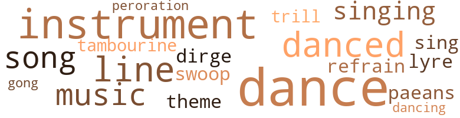
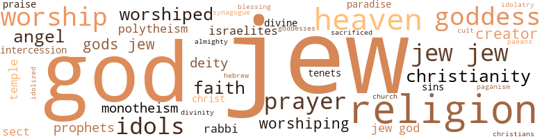

Queen of Persis: A Story of Esther Who Saved Her People, by Cotton, Ella Earl (1960)
44 music-related terms matched in this text.
Most frequent terms in this topic: dance (10); instrument (6); danced (4); line (3); music (3)
dance.n.01
Definition: an artistic form of nonverbal communication
| word | sentence |
|---|---|
| dance | The answer was the dance , to which all the people were accustomed . |
| dance | That was it , the dance . |
| dance | Second , he urged , " Let the people praise His name in the dance . " |
| dance | Although the king himself would get drunk and dance the national dance , he did so as a political measure for the consolidation of the empire . |
| dance | So the king became the most illustrious sponsor of the dance , which history does not euphemize as bawdy but pre-procreative , and credited the king with a predilection for it . |
| dance | Thus in his religious , sensual proclivities the king was the chief inspiration in the festival dance honoring the goddess of fertility . |
| dance | In this combined sense one was both worshiping one 's particular goddess , Anahita , and dancing the sexual dance in a frenzied orgy for three or four days . |
| dance | King Ahasuerus participated in the dance as exhibitionist and as example of his approval of it . |
dance.v.03
Definition: skip, leap, or move up and down or sideways
| word | sentence |
|---|---|
| danced | The usual accessory was the veil , more revealing than concealing , and enhancing the artistry of the dancer ( though professionals also danced in glittering ornaments without veils ) . |
| danced | " The sweet Singer of Israel danced before the Lord with all his might . " |
| dance | The daughter of Herodias would dance before Herod for the head of John the Baptist . |
| dance | Although the king himself would get drunk and dance the national dance , he did so as a political measure for the consolidation of the empire . |
| danced | Robed or not , the king therefore danced abandonedly in the annual festival to the newly acclaimed goddess of love . |
| danced | The few occasions they danced for the king were the highlights of their lives . |
| dancing | In this combined sense one was both worshiping one 's particular goddess , Anahita , and dancing the sexual dance in a frenzied orgy for three or four days . |
dirge.n.01
Definition: a song or hymn of mourning composed or performed as a memorial to a dead person
| word | sentence |
|---|---|
| dirge | Mordecai 's lamentations pierced the dome of heaven before the palace gate in a loud wailing dirge that smote the ears of all doomed Jews who lay along the streets fasting , weeping , and praying to God for deliverance . |
gong.n.01
Definition: a percussion instrument consisting of a metal plate that is struck with a softheaded drumstick
| word | sentence |
|---|---|
| gong | Now that the gong of doom had struck , there was no going backward . |
lyre.n.01
Definition: a harp used by ancient Greeks for accompaniment
| word | sentence |
|---|---|
| lyre | Haman 's sons exulted and re-joiced at Mordecai 's impending death , while Zeresh played on the lyre to beguile the intensely wrought-up Ham an , who feverishly darted here and there encouraging the workmen to hasten the completion of the gallows by promises of a feast and a bribe of money , far into the night went the sounds of the saws and the ringing of the hammers in the courtyard of Haman , which was sweet music in his ears . |
music.n.01
Definition: an artistic form of auditory communication incorporating instrumental or vocal tones in a structured and continuous manner
| word | sentence |
|---|---|
| music | He heard her voice in the whisperings of the winds , the trilling of the birds ; in the lilting music of song , in the cadence of laughing voices the trickle of a peal would pierce his consciousness in reminding him of Vashti 's gaiety . |
| music | Haman 's sons exulted and re-joiced at Mordecai 's impending death , while Zeresh played on the lyre to beguile the intensely wrought-up Ham an , who feverishly darted here and there encouraging the workmen to hasten the completion of the gallows by promises of a feast and a bribe of money , far into the night went the sounds of the saws and the ringing of the hammers in the courtyard of Haman , which was sweet music in his ears . |
| music | Every appeal to the senses of Sybarites was made in art , delectable food , exotic perfumes , sensuous music , and the soft , silken caress of apparel , draperies , couches , carpets , and hangings - all to heighten the sensuous atmosphere . |
musical_instrument.n.01
Definition: any of various devices or contrivances that can be used to produce musical tones or sounds
| word | sentence |
|---|---|
| instrument | Esther was no longer the inexperienced , faltering fainting woman , standing on the threshold of death , so shocked by the dilemma in which she found herself that her mind was so paralyzed with fear that she was unable to think clearly , but now in answer to her agonizing prayers she was given sage understanding , and she is not her own but God 's instrument of deliverance of her people , the Jews . |
| instrument | Esther was not her own but the instrument of deliverance . |
| instrument | Haman 's sweet turtledove had not let him down , as he knew she would not , but had come up with a most expedient instrument to simple that he wondered that he had not thought of it . |
| instrument | And so simple as the instrument of his purpose . |
| instrument | There it was - dancing - the unsuspected instrument of nationalizing the empire . |
| instrument | And for the purpose they chose a religious idea , combined it with the secular custom of dancing , and made it the instrument of unification of the empire and the link between king and subjects . |
paean.n.02
Definition: (ancient Greece) a hymn of praise (especially one sung in ancient Greece to invoke or thank a deity)
| word | sentence |
|---|---|
| paeans | This was reversing the order of the Lowly One who rode triumphantly one day to the paeans of " Hosannah ! " and the next day to the execrating cry , " Crucify him ! " |
peroration.n.02
Definition: (rhetoric) the concluding section of an oration
| word | sentence |
|---|---|
| peroration | As the peroration ended , the faltering , swaying form went stumbling down the earthen steps as the pointing finger directed , knelt , and somehow in superhuman strength poised a second , to fall or lay her small form into the cavity excavated for it . |
refrain.n.01
Definition: the part of a song where a soloist is joined by a group of singers
| word | sentence |
|---|---|
| refrain | And there were sent from the king 's house twenty-seven thousand fresh , choice youths , with blithesome young voices , with golden cups in their right hands and golden pitchers in their left hands , to take up the refrain as they marched before the righteous Mordecai crying , " This is what is done for the man whom the king , the creator of heaven and earth , longs to honor . " |
sing.v.02
Definition: produce tones with the voice
| word | sentence |
|---|---|
| sing | Hear my prayer , and be merciful unto thine inheritance : and turn our mourning into feasting , that we may live , O Lord , and sing praises to thy name , and destroy not the mouth of those that praise thee , O Lord . " |
singing.n.01
Definition: the act of singing vocal music
| word | sentence |
|---|---|
| singing | However , it was more than likely that he listened less to applause and more to the inner voices that were singing in his heart and mind of a united and peaceful empire , with freedom of speech for all people - that the once glorious empire redolent with the nobility and majesty of its founder might have a renaissance and recapture its former glory . |
| singing | No garden was complete without singing nightingales , and the exotic flowers of the palace garden were beyond description . |
song.n.01
Definition: a short musical composition with words
| word | sentence |
|---|---|
| song | He heard her voice in the whisperings of the winds , the trilling of the birds ; in the lilting music of song , in the cadence of laughing voices the trickle of a peal would pierce his consciousness in reminding him of Vashti 's gaiety . |
| song | Isolated as they were , there was no least sound to break the silence of night except the soft twitterings of the birds and the sweet song of the nightingale in the gardens , which had calmed and lulled to sleep each beautiful maiden in her fantasies of dreamland . |
| songs | Or that sweet mating songs of the birds in spring 's grand rhapsodies will trill in ecstasy about thy desolate repository - thou who hast dishonored the king and all women and thyself as well ? |
swoop.n.01
Definition: (music) rapid sliding up or down the musical scale
| word | sentence |
|---|---|
| swoop | It would have been less than human if , he being but mortal man , his heart did not glow and thrill at the wild tumultuous outburst of pagan and Jewish relief from the tenseness over the situation which had hung over the Jews like the great evil bird hanging aloft in the sky ready to swoop down at that exact climactic point of life and death . |
tambourine.n.01
Definition: a shallow drum with a single drumhead and with metallic disks in the sides
| word | sentence |
|---|---|
| tambourine | Miriam , sister of Moses and Aaron , with tambourine in hand , had led all the women in dancing . |
theme.n.03
Definition: (music) melodic subject of a musical composition
| word | sentence |
|---|---|
| theme | The most probable belief is that the Book of Esther was written by one who had most at stake and the traditional ability and wisdom of the scholar of scholars , but who could write very adroitly and circuitously and positively around the controversial heart of the theme " one God " without once mentioning the word God . |
tune.n.01
Definition: a succession of notes forming a distinctive sequence
| word | sentence |
|---|---|
| lines | Among civilized or barbarian , Jew or gentile , dancing has always been an art carried to perfection in the aesthetic Orient , where all are devotees of the beautiful lines , curves , and graceful motions of the body . |
| line | From famous buildings , spires and domes rise in unerring beauty of line and curve , ornamented with precious stones that glow and glisten in the sunlight with breath-taking beauty . |
| line | As the scion of a most illustrious line , a less precipitate introduction of Ahasuerus would seemingly be more in order , in which his personality would be taken into consideration . |
| line | The children of kings were unrestrained and were taught to dominate and demand obedience from others , especially male children in line for the throne . |
warble.v.01
Definition: sing or play with trills, alternating with the half note above or below
| word | sentence |
|---|---|
| trill | Or that sweet mating songs of the birds in spring 's grand rhapsodies will trill in ecstasy about thy desolate repository - thou who hast dishonored the king and all women and thyself as well ? |
209 violence-related terms matched in this text.
Most frequent terms in this topic: kill (25); hate (12); anger (10); killed (10); jealousy (8)
aggression.n.01
Definition: a disposition to behave aggressively
| word | sentence |
|---|---|
| aggression | Another , more important reason may have been to flaunt the wealth , magnificence , and power of the empire so as to discourage any ideas of aggression against the empire at a future time . |
anger.n.01
Definition: a strong emotion; a feeling that is oriented toward some real or supposed grievance
| word | sentence |
|---|---|
| anger | Then he lifted up his countenance that was flushed with glory in fierce anger . |
| anger | Some said he was so wrought up that he went out into the palace garden to cool off his anger by cutting down young trees as symbols of Haman 's dearest possessions , his ten sons . |
| anger | Another opinion is that he was uncomfortably heated with wine and anger , and wished to cool off in the outer air because of the natural restlessness of anger that overthrows reason . |
| anger | Another opinion is that he was uncomfortably heated with wine and anger , and wished to cool off in the outer air because of the natural restlessness of anger that overthrows reason . |
| anger | At any hint of an insult , dark eyes would flash in anger , and sibilant invectives hiss around . |
| anger | The anger of that mob of men , snarling and fighting each over his claim that his wife was the most beautiful woman , can hardly be imagined . |
| anger | At the banquet the king 's violent anger , which had precipitated his challenge to the assembly , was responsible for his rash , unreasonable , and disastrous command to the queen . |
| anger | So great was his anger that it had somewhat shocked the debauches out of their alcoholic haze , and they sat with mouths agape , watching the door to catch the first sight of the queen when she would enter . |
| anger | Ail bedlam broke loose , and the king alternated between incoherency and spasms of outspoken anger . |
| anger | This small incident stirred up anger for a terrible revenge . |
anger.v.02
Definition: become angry
| word | sentence |
|---|---|
| angered | To have done less would have angered the rulers of the provinces from which the beautiful girls had been chosen . |
battle.v.01
Definition: battle or contend against in or as if in a battle
| word | sentence |
|---|---|
| combat | Always in the extremity of human endurance , when the wave of sorrows and trials of life , the battles and the tests , sweep over troubled heads , there is a surcease somewhere to retard and combat them for and with mankind , if one but has the faith to expect and receive it . |
| battling | Seeds of principles were sinking their roots deeper and deeper ; truth , right , was battling with man 's baser proclivities ; the minds and spirits of men were imbued and bursting into flower with the humanities , democracy , the rights of the individual , freedom for all mankind . |
| combat | Sick in body , mind , and soul , with no fortitude to combat it , the king was in despair and in need of a remedy that could not be long delayed . |
brawl.n.02
Definition: a noisy fight in a crowd
| word | sentence |
|---|---|
| free-for-all | This free-for-all discussion was the last straw , and the brawl was on and was fought furiously by angry , besotted men , each distinguishing himself in vileness according to his own repertoire . |
brutality.n.02
Definition: a brutal barbarous savage act
| word | sentence |
|---|---|
| barbarism | ( This condition of affairs applied only to that convulsive period in which civilization and barbarism were in continuous upheaval and struggle for supremacy . |
character_assassination.n.01
Definition: an attack intended to ruin someone's reputation
| word | sentence |
|---|---|
| assassination | And if , as is averred , Queen Esther had unlimited power over King Ahasuerus , that was so because of his one undeniable virtue - his supreme love for her , to the end of his ill-fated life , which ended by his own hand or by assassination , toward which fate had been steadily driving him . |
contemn.v.01
Definition: look down on with disdain
| word | sentence |
|---|---|
| scorned | This grievous thing of her personal humiliation as a woman scorned or undesired , was the pivot upon which her plea was based . |
| disdaining | With women , queen or beggar maid , it is the same : reason and love turn topsy-turvily , disdaining any ideas of system . |
| scorn | This would naturally account for Haman 's fury against Mordecai , coming as he did so joyously from the banquet for the king , only to be met with more scorn and contempt from his sinister enemy . |
| scorn | And the God of heaven looking on laughed to scorn the hope of the wicked Haman ; and knowing what was about to happen , He was delighted that it would be so . |
| despised | The Jews were despised in no sense of racial connotation but in a religious sense . |
| despised | I have despised great men , and governors of provinces have waited upon me . |
| scorned | Perhaps she would have scorned any such specious-appearing honor . |
| despise | This deed that the queen hath done shall be carried abroad unto all women , so that they shall despise their husbands when they hear that the king Ahasuerus commanded Vashti the queen to be brought in before him , but she came not . |
| despised | The decree more than proved Haman to be the archfiend of all times , who would murder en masse in order to kill his one hated and despised enemy if it left do trace that would injure his good reputation and world-wide prestige . |
crucify.v.01
Definition: kill by nailing onto a cross
| word | sentence |
|---|---|
| Crucify | This was reversing the order of the Lowly One who rode triumphantly one day to the paeans of " Hosannah ! " and the next day to the execrating cry , " Crucify him ! " |
death.n.08
Definition: the act of killing
| word | sentence |
|---|---|
| death | But her punishment greatly exceeded her offense , even though a punishment of disposal without the death penalty would have been a disgrace that no sovereign would live under . |
defy.v.01
Definition: resist or confront with resistance
| word | sentence |
|---|---|
| withstood | The towering fame of Cyrus the Great has withstood twenty-four centuries and all the circumstances attendant upon them from man and nature , yet is still untarnished . |
desecrate.v.01
Definition: violate the sacred character of a place or language
| word | sentence |
|---|---|
| desecrate | Into this realm no one might intrude or desecrate . |
| profane | She repudiated it and denounced the messengers as liars who would profane her by bringing such a message , purportedly from the king , who could never be guilty of anything so heinous . |
destroy.v.04
Definition: put (an animal) to death
| word | sentence |
|---|---|
| destroyed | Also , they had sees to it that Vashti 's life-size statue had been taken out of the king 's chambers and destroyed , and they had removed every vestige that would remind Ahasuerus of Vashti - but one , his heart . |
| destroy | Hear my prayer , and be merciful unto thine inheritance : and turn our mourning into feasting , that we may live , O Lord , and sing praises to thy name , and destroy not the mouth of those that praise thee , O Lord . " |
| destroy | Nevertheless it satisfies them not that we are in bitter captivity ; but they have joined hands with their idols , that they will abolish that which thou with thy mouth hast ordained , and destroy thine inheritance , and stop the mouth of them that praise thee , and quench the glory of thy house , and thine altar , and open the mouths of the heathen to celebrate the virtues of idols , and that a fleshly king shall be magnified forever . |
| destroy | Presently , as soon as the king looked and saw Queen Esther landing sorrowfully in the court with both eyes streaming with tears , and looking up toward heaven , he was enraged and determined to destroy her , and he shouted uncertainly , and said , " Who has dared to enter the court uncalled ? " |
| destroy | On this doleful night of imminent death , none slept among the Jews or the good people who sympathized with The Jews were about to die as a nation , and in their mortal agony were hardly to blame for their unreasonable charges to Esther and Mordecai , broken reeds at best , but their sole succor for deliverance while they waited and mourned in sackcloth and ashes , praying to the God of heaven for deliverance , expecting the while that would use her influence with the king to have the wicked Hum destroyed , while she was giving banquets for the king and chat enemy Haman who would destroy them . |
| destroy | And well he might be terrified , for his sins had finally caught up with him , since he had suddenly discovered that he had affronted both the king and the queen - the king by Haman 's condemning his wife to death , the queen by his attempting to destroy her and her people . |
| destroyed | And Haman with base heart spoke to King Ahasuerus evil things concerning Israel , saying , " Let them be destroyed " ; but the king answered , " I am afraid of their God , lest he treat me as he has those who have gone before me . " |
| destroy | And in spite of Mordecai 's subsequent decree ordering the Jews to flee from their outlying villages and small towns to the walled cities and there stand up and fight for their lives against those who would destroy them , the riffraff , the scum of the land , under the permanent pretext of Haman 's decree , could with impunity kill the Jews for their lands and wealth in apparent ignorance of Mordecai 's decree . |
| destroy | In this stand they gave such an account of themselves that fear fell upon all those who would destroy them . |
| destroyed | At this period dynasties had been destroyed , governments overthrown , countries conquered , and peoples made subject by the invincible power of warfare pursued by ambitious and insuperable men . |
draw.v.23
Definition: pull (a person) apart with four horses tied to his extremities, so as to execute him
| word | sentence |
|---|---|
| draw | In the turmoil of the dark and sleepless nights of an eternity of suffering , she needed no eyes to draw up into review the whole panorama of their married life as it unfolded and unrolled before the eyes of her mind , heart , and soul . |
eliminate.v.03
Definition: kill in large numbers
| word | sentence |
|---|---|
| annihilate | Haman passed away , and Mordecai sat in his place , and was clothed with power for the saving of the people whom their wicked adversary would annihilate . |
| decimating | Those who would with impunity have killed them heartlessly while they were defenseless and not allowed to fight fled in terror from the offended Jews who stood up in defiant battle , decimating their enemies right and left . |
envy.n.01
Definition: a feeling of grudging admiration and desire to have something that is possessed by another
| word | sentence |
|---|---|
| envy | " Despite all the honors of the world , more wealth than I am able to consume , and the most honored father of a multitude of sons , who am the envy of all men , all of that fails to satisfy me as long as I see Mordecai the Jew sitting in the Sanhedrin with the young men in the king 's gate , and he does not bow down to me . " |
| Envy | Envy and jealousy are scant in fruits of appreciation - generosity and love for any who bypass them on the ladder of attainment . |
| envy | In this lowly job none would question his origin , notice or envy him , as they would have if his position had been an elevated one . |
| envy | In which case all the batteries of envy , jealousy , and hate would have been turned in full power upon him increasingly as the job rose in value and prestige . |
erase.v.01
Definition: remove from memory or existence
| word | sentence |
|---|---|
| erased | The secretary , suddenly remembering that Mordecai had not received the merited honor , was terrified and erased that part surreptitiously . |
ferociousness.n.01
Definition: the trait of extreme cruelty
| word | sentence |
|---|---|
| viciousness | On the other hand , it is said , on the whole he showed a weak and passionate disposition that undermined his good qualities - perhaps not to the degree of viciousness , but an uncontrollable temper made him unfit for high office and made his reign inglorious . |
fight.n.02
Definition: the act of fighting; any contest or struggle
| word | sentence |
|---|---|
| fighting | In the hand-to-hand fighting of those days such a dual power was a rampart of protection not easily stormed . |
fight.n.05
Definition: a boxing or wrestling match
| word | sentence |
|---|---|
| fights | Give me eloquent speech in my mouth before the lion : and turn his heart to hate him that fights against us , that there may be an end of him and of those that are like-minded with him : but deliver us with thine hand , and help me who am desolate and have no one but thee , O Lord . |
| fight | That was so during the four years that Ahasuerus was away fighting Greece - a fight he lost . |
fight.v.02
Definition: fight against or resist strongly
| word | sentence |
|---|---|
| fighting | With the throne inevitably went warfare , and eventually Ahasuerus had his share of fighting resurgent forces and countries , as well as other ambitious challengers for the honor of acquiring the empire that had risen to most glorious heights . |
| fought | They stood at the sides of their men , fought with them , and even led in battles , and in general inspired their men The Foreign Minister of Israel , Mrs. Golda Meir , is an example . |
| fight | Considered also were the apertures for arms that would be strong enough to fight and tender enough to nestle the head of another queen some day . |
| fight | And in spite of Mordecai 's subsequent decree ordering the Jews to flee from their outlying villages and small towns to the walled cities and there stand up and fight for their lives against those who would destroy them , the riffraff , the scum of the land , under the permanent pretext of Haman 's decree , could with impunity kill the Jews for their lands and wealth in apparent ignorance of Mordecai 's decree . |
| fight | After the miraculous downfall of Haman and the startling reinstatement of a Premier in the person of the ( presumably ) lowly Mordecai with unlimited power , all in the twinkling of an eye , so to speak , the Jews , already a militarized people , were mobilized into instant readiness and ordered to stand up and fight for their lives . |
| fight | Those who would with impunity have killed them heartlessly while they were defenseless and not allowed to fight fled in terror from the offended Jews who stood up in defiant battle , decimating their enemies right and left . |
| fought | This free-for-all discussion was the last straw , and the brawl was on and was fought furiously by angry , besotted men , each distinguishing himself in vileness according to his own repertoire . |
| fighting | The anger of that mob of men , snarling and fighting each over his claim that his wife was the most beautiful woman , can hardly be imagined . |
| fighting | That was so during the four years that Ahasuerus was away fighting Greece - a fight he lost . |
| fought | The results were that the ranks were closed up with other Jews who fought on for their lives and against worshiping idols . |
fury.n.01
Definition: a feeling of intense anger
| word | sentence |
|---|---|
| rage | A woman minus Esther 's qualities would without any reasoning have jumped to the conclusion that Ahasuerus was finding solace with a favorite of the harem , and in jealous rage would have sought out some reprisal that her rival would not soon forget . |
| fury | This would naturally account for Haman 's fury against Mordecai , coming as he did so joyously from the banquet for the king , only to be met with more scorn and contempt from his sinister enemy . |
| rage | Hither and yonder ran the violent crowd , snarling , pushing , and clamoring for a point of vantage , bellowing in rage at any obstruction preventing sight of the last controlled gyrations of spasmodic grimaces . |
| rage | In his furious rage , King Ahasuerus dashed headlong into what would mark the beginning of his tragedies , and the irrevocable downward plunge of his destiny . |
| rage | This decree he had signed with the king 's seal ( ring ) , and he despatched the decree to the ends of the empire in his rage for vengeance against Mordecai the Jew . |
| rage | But his heart burned with rage and vengeance . |
grudge.n.01
Definition: a resentment strong enough to justify retaliation
| word | sentence |
|---|---|
| grudge | Do not regard me as an enemy , in thy heart , and do not cherish a grudge against me , as Esau my father cherished . |
| grievances | It is possible that the high court had personal grievances against Vashti because of her influence over the king , which exceeded their influence . |
harm.v.01
Definition: cause or do harm to
| word | sentence |
|---|---|
| harmed | Avoid him that you may not be harmed also . " |
hate.n.01
Definition: the emotion of intense dislike; a feeling of dislike so strong that it demands action
| word | sentence |
|---|---|
| hatred | What started away back there was the hatred of the idolaters , against the purity of Jewish worship of the one God whom all Christian civilizations worship today . |
| hatred | After all the marvelous acquirements of his life , as men count greatness , Haman was but a little man possessed by hatred of Mordecai . |
| hatred | Because of their presumption , no people in the whole of human history has inherited such a burden of hatred as the Jews . |
| hatred | Do not remember against me the hatred toward my father , nor the jealousy of Amalek . |
| hatred | Haman himself pointed out the roots of his destruction , the single ingredient of bitterness that poisoned his whole soul - his hatred of Mordecai . |
| hatred | A people with such infallible powers of reason and logic would hardly be likely to interpret the intentions of Haman in the light of pure chauvinism , but rather would consider him as one possessed with such corroding hatred that nothing would satisfy him but complete extermination of them from the face of the earth , children tod til , leaving not one seed to sprout again . |
| hate | In which case all the batteries of envy , jealousy , and hate would have been turned in full power upon him increasingly as the job rose in value and prestige . |
| hate | Hamm was intellectually brilliant , powerful in position , the king 's superior in administrative ability , yet filled with hate of and desire for vengeance against Mordecai , which robbed him of his reason . |
| hate | If Mordecai had been a fool , as he feigned to be , and had possessed but a modicum of reason but had a healthy mind , free from hate and vengeance , his chances no doubt would have balanced the scales with Haman . |
| hatred | All of that and more he had , yet he could enjoy none of it or live because of his burning hatred against Mordecai , a man seemingly of the most humble class . |
hate.v.01
Definition: dislike intensely; feel antipathy or aversion towards
| word | sentence |
|---|---|
| hate | Give me eloquent speech in my mouth before the lion : and turn his heart to hate him that fights against us , that there may be an end of him and of those that are like-minded with him : but deliver us with thine hand , and help me who am desolate and have no one but thee , O Lord . |
| hate | Thou hast knowledge of all things ; and thou knowest that I hate the glory of him who does not keep the Law . . . . |
| hate | Such people as still hate the Jews today are more outmoded or ignorant than pagan people two thousand years ago , for those people of the Orient knew what they were hating the Jews for - because the Jews would not bow down to idol worship that permitted licentious living . |
| hating | Such people as still hate the Jews today are more outmoded or ignorant than pagan people two thousand years ago , for those people of the Orient knew what they were hating the Jews for - because the Jews would not bow down to idol worship that permitted licentious living . |
| hated | This they said not because they loved Mordecai , but because they hated Haman . |
| hated | But the majority of peoples everywhere hated these censorious people , who set themselves up and apart in the isolation of implied superiority . |
| hates | Accordingly , none hates the Jew now because of his religion but by tradition ; that is , the majority of those who hate Jews do not know what they hate them for , or that ill-feeling arose over a difference of religion . |
| hate | Accordingly , none hates the Jew now because of his religion but by tradition ; that is , the majority of those who hate Jews do not know what they hate them for , or that ill-feeling arose over a difference of religion . |
| hate | Accordingly , none hates the Jew now because of his religion but by tradition ; that is , the majority of those who hate Jews do not know what they hate them for , or that ill-feeling arose over a difference of religion . |
| hate | If I have obtained thy favor , O king , and if it seems good to the king of the world , let the saving of my life from the hands of those that hate me be given at my request , and the deliverance of my people from the hands of their enemies as my petition . |
| hated | And when the queen saw that it seemed dreadful to the king , and that he hated the wrongdoer , she said , " Be not angry , my lord ! |
| hate | And none has any reason at all - except those who must hate some other people to bolster their own egos , vapid though this may be . |
| hated | Another opinion was that he might avoid the sight of the hated Haman . |
| hated | Then there was the prestige Haman might forfeit by killing one to far beneath him ( supposedly ) , this specimen of contempt who would achieve the only honor of his life as the man Haman hated so much that he killed him . |
| hate | The Amalekites were the first people to hate the Jews , but they are not the last people to hate another nation simply because they do not like its religion . |
| hate | The Amalekites were the first people to hate the Jews , but they are not the last people to hate another nation simply because they do not like its religion . |
| hates | haps three-fourths of the world is yet so ignorant that it does not know why it hates the Jews . |
| hated | The decree more than proved Haman to be the archfiend of all times , who would murder en masse in order to kill his one hated and despised enemy if it left do trace that would injure his good reputation and world-wide prestige . |
hostility.n.01
Definition: a hostile (very unfriendly) disposition
| word | sentence |
|---|---|
| hostility | Also , it is an appeal to the souls of humanity : that the Jews as a people might live as all other people in their sincere beliefs , free from hostility against their choice of religion , molested by none and molesting no other religions . |
injury.n.01
Definition: any physical damage to the body caused by violence or accident or fracture etc.
| word | sentence |
|---|---|
| harm | If we fling him into a lions den , the lions once did Daniel no harm . |
| injury | And if only we had been sold as slaves and as maids , I should have kept silent , so as not to trouble my lord , for the evil would have been bearable , for the enemy is not sufficient for the injury of the king . " |
| injury | Therefore , it is with no intention of adding insult to injury by quoting or not quoting the one or the other writers to clear up or to substantiate any opinion among so many critics and commentators . |
| hurt | None could measure the hurt to his pride , the suffering of his heart , the searing of his soul , and , more than all , the scorching flame of remorse that burned away the dross of his life for the first time , and left him as the residue of the baseness that court life had imposed upon his better nature . |
jealousy.n.01
Definition: a feeling of jealous envy (especially of a rival)
| word | sentence |
|---|---|
| jealousy | Perhaps she was wise enough to know the basis of jealousy , which operated in ancient times and no less in modern times . |
| jealousy | And all of this adds up to the fact that jealousy is the brand of the inferior woman , as no woman is jealous of another woman unless the other woman has some advantage over her or is superior to her , or she thinks so . |
| jealousies | Esther was gifted in the qualities of nobility , which was the cultivation of the graces , and was untarnishable by petty jealousies . |
| jealousy | Too , inviting Haman above all the other princes could drive the wedge of jealousy between the king and Haman . |
| jealousy | Bickering , jealousy , and quarrelsomeness being foreign to their household , the congenial atmosphere made their semi-royal life in the garden lively , pleasant , and happy . |
| jealousy | Regal by birth and lofty in mind and spirit , her scepter was neither for use nor abuse , but a symbol of her womanly qualities , in which there was no place for the petty meanness and jealousy which women in power can inflict on their menials and inferiors . |
| jealousy | Envy and jealousy are scant in fruits of appreciation - generosity and love for any who bypass them on the ladder of attainment . |
| jealousy | Do not remember against me the hatred toward my father , nor the jealousy of Amalek . |
| jealousy | In which case all the batteries of envy , jealousy , and hate would have been turned in full power upon him increasingly as the job rose in value and prestige . |
kick_back.v.02
Definition: spring back, as from a forceful thrust
| word | sentence |
|---|---|
| kicked | And , dying from thirst and hunger on the desert , man 's greatest symbol of wealth would have no more value than a pebble he kicked out of his path . |
kill.v.10
Definition: cause the death of, without intention
| word | sentence |
|---|---|
| kill | And the letters were sent by posts into all the king 's provinces , to destroy , to kill , and to cause to perish , all Jews , both young and old , little children and women , in one day , even upon the thirteenth day of the twelfth month , which is the month Adar , and to take the spoils of them for a prey . |
| killing | They were now at the mercy of the lowest element , which had no scruples against killing the Jews , if by so doing they could secure their property . |
| kill | If he be one of the righteous who are created in the world , and we try to kill him with the sword , the sword will perhaps turn and fall upon us . |
| kill | By what penalty then can we kill him , or what sort of death can be inflicted upon him ? |
| kill | If we put out his eyes and let him go , he will kill some of us as Samson killed the Philistines . |
| killed | If we put out his eyes and let him go , he will kill some of us as Samson killed the Philistines . |
| kill | Or have Esther and Haman planned to kill me , because Esther invites no one to the feast with me except Haman ? " |
| kill | Behold , he will present himself in the morning and will wish to ask thee to give him the man who saved thee from death in order that he may kill him ; but say thou to Haman , ' What shall be done for the man whom the king wishes to honor ? ' |
| kill | And it was found written in the book how Mordecai had informed the king concerning Bigthan and Teresh , the two eunuchs of the king who ostensibly guarded the king 's door , but plotted to kill him in his bedroom . |
| kill | As the king spoke he regarded Haman closely , and thought in his heart and said to himself , " Haman wishes to kill me and to make himself king in my stead : I see it in his face . " |
| kill | When Mordecai saw that he came toward him leading a splendid horse , he was frightened and said to the rabbi , " This wretch , no doubt , comes to kill me . |
| killed | But when she perceived that it was her father , she flung herself from the roof and killed herself because she heaped disgrace upon the head of her father . |
| kill | And it was impossible under the circumstances for the king to misunderstand the gesture , but he had come back with the determination to kill Haman , and was ready to put the worst construction on anything that he might do . |
| kill | Further proof of Haman 's desperation to destroy the Jews was his closing in on Mordecai without any futher dissembling or pretense on the bold , daring presumption of erecting the gallows before asking the king 's consent to kill Mordecai . |
| killed | Then said one of the eunuchs who stood before the king , " There is the gallows , too , that Haman erected for Mordecai , who spoke a good word on behalf of the king , by whose means also the king was saved from being killed . |
| killed | And the king answered and said to Mordecai , " O Mordecai , the Jew , who hast saved the king from being killed , rise , go and take Haman , the wicked enemy , the oppressor of the Jews , and hang him on the gallows which he prepared for himself . |
| kill | Spare my honor , and do not kill me or hew me in pieces like they did to Agag my father . |
| kill | Thou art good , Mordecai ; deal with me according to thy goodness , and do not take my life ; do not kill me like a branch so that my life shall be destroyed . |
| kill | But if thou art determined to kill me , cut off my head with the king 's sword , with which they kill all the nobles of the provinces . " |
| kill | But if thou art determined to kill me , cut off my head with the king 's sword , with which they kill all the nobles of the provinces . " |
| kill | And in spite of Mordecai 's subsequent decree ordering the Jews to flee from their outlying villages and small towns to the walled cities and there stand up and fight for their lives against those who would destroy them , the riffraff , the scum of the land , under the permanent pretext of Haman 's decree , could with impunity kill the Jews for their lands and wealth in apparent ignorance of Mordecai 's decree . |
| kill | Lofty ideas and ideals were crystallizing in the hearts and minds of men , who had been preceded by progenitors who had slowly and fearfully emerged from the murky haze with but one instinctive idea , to kill on sight or be killed . |
| killed | Lofty ideas and ideals were crystallizing in the hearts and minds of men , who had been preceded by progenitors who had slowly and fearfully emerged from the murky haze with but one instinctive idea , to kill on sight or be killed . |
| kill | Listening to the loose talk from the many different tribes around the palace gate , he had heard a plot to kill the king ; in this lowliest menial position in which he had chosen to serve , his brilliant mind functioned instantly and his high courage and honor challenged him into action - to save the king 's life . |
| kill | Immediately Mordecai came to power , he and Esther wrote two decrees not only to counteract Haman 's decrees but to order the Jews to kill all their enemies . |
| killed | Those who would with impunity have killed them heartlessly while they were defenseless and not allowed to fight fled in terror from the offended Jews who stood up in defiant battle , decimating their enemies right and left . |
| killed | Great of heart , great of mind , and most exalted above the common run of the species , Vashti distinguished herself in her relationship and treatment of these women , any of whom she could have ordered to be killed , on any whim or pretext . |
| kill | In this way he heard two men plotting to kill the king by poisoning his drinking water . |
| kill | Mordecai himself had told about the plot to kill the king , but Esther had told the king before that man had the chance . |
| killed | For as soon as Haman had been elevated to the highest office of the empire but one , the king 's , Haman had written a decree that all the Jews should be killed on a certain day . |
| kill | The decree that had gone out to kill the Jews on a certain day applied to the City of Shushan , because it would take time to liquidate all the Jews throughout the empire . |
| killed | Many large groups of the Jews had been killed here and there for two reasons - first , to terrorize them as a nation , and , second , to get their property . |
| kill | Should he kill Mordecai ? |
| killing | Then there was the prestige Haman might forfeit by killing one to far beneath him ( supposedly ) , this specimen of contempt who would achieve the only honor of his life as the man Haman hated so much that he killed him . |
| killed | Then there was the prestige Haman might forfeit by killing one to far beneath him ( supposedly ) , this specimen of contempt who would achieve the only honor of his life as the man Haman hated so much that he killed him . |
| Kill | Kill all of the Jews , and his one-man vengeance would be appeased . |
| Kill | Kill him he must . |
| kill | The decree more than proved Haman to be the archfiend of all times , who would murder en masse in order to kill his one hated and despised enemy if it left do trace that would injure his good reputation and world-wide prestige . |
killing.n.02
Definition: the act of terminating a life
| word | sentence |
|---|---|
| kill | So blinded was he by his self-esteem that he was ready for the kill . |
knife.n.02
Definition: a weapon with a handle and blade with a sharp point
| word | sentence |
|---|---|
| knife | If a knife be thrust at his throat , the knife was turned away from Isaac . |
| knife | If a knife be thrust at his throat , the knife was turned away from Isaac . |
| knife | How true and how strange may a man plunge the knife deep into the heart of another with the utmost equanimity , and yet himself lie wounded and prostrated at a mere pinprick from another . |
malice.n.01
Definition: feeling a need to see others suffer
| word | sentence |
|---|---|
| spite | But in spite of many noble characteristics , he showed on the whole a weak and emotional disposition that made him unfit for his high office and made his rule inglorious . |
| spite | And in spite of Mordecai 's subsequent decree ordering the Jews to flee from their outlying villages and small towns to the walled cities and there stand up and fight for their lives against those who would destroy them , the riffraff , the scum of the land , under the permanent pretext of Haman 's decree , could with impunity kill the Jews for their lands and wealth in apparent ignorance of Mordecai 's decree . |
| spite | For thousands of years that bond has been heated , welded , and riveted together by abuse , mistreatment , spite , hatred , and murder . |
molest.v.01
Definition: harass or assault sexually; make indecent advances to
| word | sentence |
|---|---|
| molested | Also , it is an appeal to the souls of humanity : that the Jews as a people might live as all other people in their sincere beliefs , free from hostility against their choice of religion , molested by none and molesting no other religions . |
| molesting | Also , it is an appeal to the souls of humanity : that the Jews as a people might live as all other people in their sincere beliefs , free from hostility against their choice of religion , molested by none and molesting no other religions . |
murder.n.01
Definition: unlawful premeditated killing of a human being by a human being
| word | sentence |
|---|---|
| murder | For thousands of years that bond has been heated , welded , and riveted together by abuse , mistreatment , spite , hatred , and murder . |
| murder | The decree more than proved Haman to be the archfiend of all times , who would murder en masse in order to kill his one hated and despised enemy if it left do trace that would injure his good reputation and world-wide prestige . |
murder.v.01
Definition: kill intentionally and with premeditation
| word | sentence |
|---|---|
| slay | Now , then , render me acceptable in his sight , that he may not slay me , but may grant my desire and my petition which I am about to ask him . |
| slay | And Haman , the bodyguard of the king standing by , wished to slay Esther . |
| slay | And the king looked and saw that it was a man , who addressed the king thus : " Haman desires to slay thee and to make himself king in thy stead . |
| slay | Haman answered then , " I ask thee to slay me rather than to impose this duty upon me . " |
| slay | And Esther said , " An enemy and foe , this wicked Haman , who wishes to slay thee this evening in thy bedchamber , and who even today has asked to be clothed with a royal garment , and to ride upon thy horse , and to place the golden crown upon his own head , and to rebel against thee , and to take away thy kingdom from thee . |
| slay | But the heavenly voice brought to pass in that hour , that honor was rendered to the righteous Mordecai , my paternal uncle [ cousin ] , son of Abraham , whom the wicked Haman sought to hang ; therefore is his name called the wicked Haman , for this is the one who has wished to lay hands upon the Jewish people , who are called children of the Lord of all , and who has wished to slay them . " |
| slain | The first decree had been written , sealed with the king 's signature , and distributed throughout the city of Shushan and to the ends of its suburbs , that the Jews were to be slain on a certain day . |
neutralize.v.04
Definition: get rid of (someone who may be a threat) by killing
| word | sentence |
|---|---|
| liquidating | Inured as those seven men were in the business of liquidating undesirables , seldom do a number of men operate in unison without some tendency toward guilty consciences . |
| liquidate | The decree that had gone out to kill the Jews on a certain day applied to the City of Shushan , because it would take time to liquidate all the Jews throughout the empire . |
rape.v.01
Definition: force (someone) to have sex against their will
| word | sentence |
|---|---|
| raped | The richest and most famous cities were raped and sacked , their treasures of art , silver and gold , and precious stones transported to Shushan , so that the storehouses were filled to overflowing . |
| dishonored | Or that sweet mating songs of the birds in spring 's grand rhapsodies will trill in ecstasy about thy desolate repository - thou who hast dishonored the king and all women and thyself as well ? |
resentment.n.01
Definition: a feeling of deep and bitter anger and ill-will
| word | sentence |
|---|---|
| bitterness | Haman himself pointed out the roots of his destruction , the single ingredient of bitterness that poisoned his whole soul - his hatred of Mordecai . |
| bitterness | Thy cup of bitterness is now before thee . |
resist.v.04
Definition: withstand the force of something
| word | sentence |
|---|---|
| resist | Together in unison Mordecai and Esther prayed , calling to remembrance all the works of the Lord , and said , " O Lord , thou King Almighty , the whole world is in thy power , and if it be thy will to save Israel , there is none that can gainsay thee : for thou hast made heaven and earth , and all die wondrous thing that are beneath the heaven ; and thou art Lord of all , and there is no man that can resist thee , who art the Lord . |
| resist | That was a far cry from their former condition , in which they were not allowed to resist but could only stand and die . |
| resist | The palace of Ahasuerus had been built for time and eternity and to resist the inroads of fortuity . |
savageness.n.01
Definition: the property of being untamed and ferocious
| word | sentence |
|---|---|
| savagery | Those self-appointed custodians of the affairs of those they love kept tireless vigils within the domains of mankind , with whom they have marched out of savagery into civilization . |
shock.n.02
Definition: the violent interaction of individuals or groups entering into combat
| word | sentence |
|---|---|
| shock | Esther had little time for her own transfiguration , which might have been delayed had the shock been less , or had not the invincible Mordecai taken the mantle from around himself and placed it squarely upon her shoulders . |
slaughter.n.03
Definition: the savage and excessive killing of many people
| word | sentence |
|---|---|
| massacre | In and around the city of Shushan the massacre of the Jews was scheduled to begin and to extend from there outward through ail the provinces . |
sword.n.01
Definition: a cutting or thrusting weapon that has a long metal blade and a hilt with a hand guard
| word | sentence |
|---|---|
| sword | If he be one of the righteous who are created in the world , and we try to kill him with the sword , the sword will perhaps turn and fall upon us . |
| sword | If he be one of the righteous who are created in the world , and we try to kill him with the sword , the sword will perhaps turn and fall upon us . |
| sword | Make haste ; go to the king 's treasury and fetch thence one of the fine purple coverings and take the garment of fine Frankish silk adorned with precious stones and pearls , from all four of whose sides hang golden bells and pomegranates ; and take the great crown of Macedonian gold which was brought me from the cities of the provinces on the first day I was established in the kingdom ; and take thence the fine sword and armor that were brought me from the province of Kush and other ceremonial accessories that appertain to them , and with them and none other array Mordecai . " |
| sword | But if thou art determined to kill me , cut off my head with the king 's sword , with which they kill all the nobles of the provinces . " |
| sword | A sniveling , cringing coward , as all cruel people are when cornered , Haman had prostrated himself in abject prayer to Mordecai to cut off his head with the king 's sword , an honorable concession to nobility which would have sweetened his last thoughts . |
| sword | What father could have more deserved a replica of himself who would take up the sword where he would lay it down than Cyrus the Great ? |
thrashing.n.01
Definition: a sound defeat
| word | sentence |
|---|---|
| debacle | While Haman , his family and his vast political entourage were still talking about the debacle that had befallen him , the king 's eunuchs appeared and brought Haman with speed to the second banquet that Esther had prepared . |
| thrashing | The answer to his meditations came not in the spectacular manner his subtle thrashing around might have indicated , but in the familiar facts of life and customs . |
torment.v.01
Definition: torment emotionally or mentally
| word | sentence |
|---|---|
| torture | Instead , there was the most refined , excruciating torture of mind and senses which they had prepared for her and now held her up to hear - not the oration for the dead , but the oration of the dead for her . |
vilify.v.01
Definition: spread negative information about
| word | sentence |
|---|---|
| revile | They go up to their synagogue and read in their Scriptures and interpret their prophets , and curse our king and revile our rulers , and say , ' This is the day in which the great God rested . ' |
violence.n.01
Definition: an act of aggression (as one against a person who resists)
| word | sentence |
|---|---|
| violence | Otherwise , no hand of violence was laid upon her . |
war.n.03
Definition: an active struggle between competing entities
| word | sentence |
|---|---|
| warfare | With the throne inevitably went warfare , and eventually Ahasuerus had his share of fighting resurgent forces and countries , as well as other ambitious challengers for the honor of acquiring the empire that had risen to most glorious heights . |
| warfare | In his years of warfare Ahasuerus had opportunities to prove himself . |
| warfare | He had his own army of brains and brawn issuing directly from his own loins , and general as he was , he could both generate and map the strategy of warfare mentally and physically . |
| warfare | The whole of the Persian Empire had been acquired through the prowess of warfare . |
| warfare | Dancing as a profession , and as a national amusement , was also an expression of triumph in victorious warfare , and an established custom . |
| warfare | With that natural inheritance to the throne went the profession of soldiering and warfare , which was repugnant to Ahasuerus . |
| warfare | At this period dynasties had been destroyed , governments overthrown , countries conquered , and peoples made subject by the invincible power of warfare pursued by ambitious and insuperable men . |
| warfare | Vashti was the granddaughter of King Nebuchadnezzar of Babylon , an aggressor against the Jews who was an invincible militarist , as proved by his constant warfare against Tyre for twelve years , in which he was finally victorious . |
weapon.n.01
Definition: any instrument or instrumentality used in fighting or hunting
| word | sentence |
|---|---|
| weapons | The accepted weapons of discretion , strategy , and divination are tooled , refined , and keened by artificers precise in their requirements for their purposes . |
| weapon | Especially considered is the weapon of destruction of a nation , the decree . |
wound.n.01
Definition: an injury to living tissue (especially an injury involving a cut or break in the skin)
| word | sentence |
|---|---|
| wound | From our first breach we have not yet recovered , nor is healing restored from our wound , nor have we received consolation from our sorrow , nor have the afflictions of our hearts departed from us . |
wrath.n.01
Definition: intense anger (usually on an epic scale)
| word | sentence |
|---|---|
| wrath | Now the king was rising in his wrath from the wine-drinking , and flinging away his napkin , he started out into the palace garden . |
| wrath | After making such a revolutionary concession , the king 's wrath was pacified for the time being . |
| wrath | Thus shall there rise too much contempt and wrath . |
481 religion-related terms matched in this text.
Most frequent terms in this topic: Jews (150); God (69); religion (36); Jew (24); gods (19)
blessing.n.05
Definition: the act of praying for divine protection
| word | sentence |
|---|---|
| blessing | In the first hour they say , ' We are repeating the Sheraa ' ; in the second , ' We are praying our prayers ' ; in the third , We are eating food ' ; in the fourth , ' We are blessing the God of heaven because he has given us food and water ' ; in the fifth , they go out ; in the sixth , they return ; and in the seventh , their wives go out to meet them and say , ' Bring split beans , because you are weary with working for this wicked king . ' |
christendom.n.01
Definition: the collective body of Christians throughout the world and history (found predominantly in Europe and the Americas and Australia)
| word | sentence |
|---|---|
| Christianity | The Jews were the chosen people to launch the battle in the cause of Christianity and to bear the brunt of it . |
| Christianity | The fact that Christianity is transferred from God to man is eminently illustrated in the ever-glowing story of the linked and inseparable lives of Mordecai and Esther . |
| Christianity | No one now is offended by the varying denominations and sects through which Christianity is dispensed . |
| Christianity | All the previous struggles of humanity toward Christianity and civilization , petty , as they must have been in comparison , were climaxed by the exploits of Cyrus the Great . |
| Christianity | Christianity is of the religion of the Jews . |
| Christianity | The world , so to speak , has accepted this Christianity formulated or received from the Spirit through the Jews , together with its textbook of guidance , the Bible . |
| Christianity | What a paradox of civilization to receive the Light of die World , Christianity and the Bible , handed down by the Jews , and sail to persecute the great people who are Jews . |
christian.n.01
Definition: a religious person who believes Jesus is the Christ and who is a member of a Christian denomination
| word | sentence |
|---|---|
| Christians | After centuries of long sufferance of the Jews because of their religious beliefs , averse to worship of idols ( which are the united beliefs of all Jews and Christians over the world ) , they are still confronted by those traditions of people too ignorant to know why the Jews receive that age-old haired in the transmutation of religion into race . |
church.n.04
Definition: the body of people who attend or belong to a particular local church
| word | sentence |
|---|---|
| church | But her people were not safe ; the church of God was not safe ; therefore she wept continuously and besought in their behalf . |
cult.n.03
Definition: followers of an unorthodox, extremist, or false religion or sect who often live outside of conventional society under the direction of a charismatic leader
| word | sentence |
|---|---|
| cult | Therefore Anahita , the goddess of love , the main feature of whose cult was prostitution , was invested with all the reproductive forces of nature . |
deity.n.01
Definition: any supernatural being worshipped as controlling some part of the world or some aspect of life or who is the personification of a force
| word | sentence |
|---|---|
| deity | In his pompous pride Haman could never cease to worship the deity that had presented him with the marvelous assembly of young gods . |
| divinity | A divinity of this kind strongly appealed to the sensual propensities of the people , and was readily accepted everywhere by the polytheistic inhabitants of Persia as their chief deity and supreme goddess . |
| deity | A divinity of this kind strongly appealed to the sensual propensities of the people , and was readily accepted everywhere by the polytheistic inhabitants of Persia as their chief deity and supreme goddess . |
| deity | The king was the representative of the tutelary deity of the state . |
| deity | Accordingly , the rank of the deity depended upon that of the king by whom it was represented , rising and falling with the fortunes of its representative . |
divine.v.01
Definition: perceive intuitively or through some inexplicable perceptive powers
| word | sentence |
|---|---|
| divine | First the Persian kings claimed to be divine ; and the people compelled the monarch to meet their expectations . |
dogma.n.01
Definition: a religious doctrine that is proclaimed as true without proof
| word | sentence |
|---|---|
| tenets | The tenets of their religion they strive assiduously to keep as pure as when handed down to them by the accounted Holy Ones , now accepted by a great majority of humanity . |
| tenets | Their children have accepted these tenets of their ancestors as prescribed for them and faithfully complied with all their requirements . |
eden.n.01
Definition: any place of complete bliss and delight and peace
| word | sentence |
|---|---|
| heaven | Could that man - who had taken her into his heart as a little girl , orphaned when death or disaster had struck her parents , carefully rearing her into womanhood , instructing her in all wisdom of true womanhood , honor and sincerity , and tender compassion for all humanity - be one and the same man now rampaging up and down the streets , crying aloud to the top of his voice to the God of heaven ? |
| heaven | Mordecai 's lamentations pierced the dome of heaven before the palace gate in a loud wailing dirge that smote the ears of all doomed Jews who lay along the streets fasting , weeping , and praying to God for deliverance . |
| paradise | But Esther had but entered her paradise ; her heart failed her and she quailed before what Mordecai requested of her . |
| heaven | At that time they investigated and found in the assembly twelve thousand young priests , and they gave them trumpets in their right hands and books of the Law in their left hands ; and , weeping and lamenting , thus they cried toward heaven : " O God of Israel , this is the Law which thou hast given us . |
| heaven | And they blew upon their trumpets , and the people responded after them , until the hosts of heaven wept and the forefathers forsook their graves . |
| heaven | Together in unison Mordecai and Esther prayed , calling to remembrance all the works of the Lord , and said , " O Lord , thou King Almighty , the whole world is in thy power , and if it be thy will to save Israel , there is none that can gainsay thee : for thou hast made heaven and earth , and all die wondrous thing that are beneath the heaven ; and thou art Lord of all , and there is no man that can resist thee , who art the Lord . |
| heaven | Together in unison Mordecai and Esther prayed , calling to remembrance all the works of the Lord , and said , " O Lord , thou King Almighty , the whole world is in thy power , and if it be thy will to save Israel , there is none that can gainsay thee : for thou hast made heaven and earth , and all die wondrous thing that are beneath the heaven ; and thou art Lord of all , and there is no man that can resist thee , who art the Lord . |
| heaven | In the extremity of her despair , the answer to her breathless prayer was dispatched from heaven and she was enabled to assemble and marshal her thoughts in the appeal which she was about to address to the king . |
| heaven | Presently , as soon as the king looked and saw Queen Esther landing sorrowfully in the court with both eyes streaming with tears , and looking up toward heaven , he was enraged and determined to destroy her , and he shouted uncertainly , and said , " Who has dared to enter the court uncalled ? " |
| heaven | An incurable human weakness is not to understand or to misunderstand our fellow man , a source of friction , a loss of friendship , a loss of love , a loss of happiness , a loss of security , a loss of heaven . |
| paradise | In that day of pomp and pageantry all was aglitter and aglow in the semblance of the bird of paradise . |
| heaven | When the gallows had reared its head to the skies , Haman arose to try the gallows with his own length , and at that same hour went forth a daughter voice from the highest heaven and said to him , " It is good , wicked Haman ; and tits thee well . " |
| heaven | And the God of heaven looking on laughed to scorn the hope of the wicked Haman ; and knowing what was about to happen , He was delighted that it would be so . |
| heaven | On this doleful night of imminent death , none slept among the Jews or the good people who sympathized with The Jews were about to die as a nation , and in their mortal agony were hardly to blame for their unreasonable charges to Esther and Mordecai , broken reeds at best , but their sole succor for deliverance while they waited and mourned in sackcloth and ashes , praying to the God of heaven for deliverance , expecting the while that would use her influence with the king to have the wicked Hum destroyed , while she was giving banquets for the king and chat enemy Haman who would destroy them . |
| Heaven | None could sleep that night , certainly not the Jews , Esther , Mordecai , or Ahasuerus , for in that night the memory of Abraham , Isaac , and Jacob came before their heavenly Father , so that an angel was sent from Heaven , Michael himself , the commander sitting at the head of the King of Glory , who drove sleep away from their eyes the whole night long . |
| heavens | The heavens have thundered against me , and the heaven of heavens lifts up its voice against me . |
| heaven | The heavens have thundered against me , and the heaven of heavens lifts up its voice against me . |
| heavens | The heavens have thundered against me , and the heaven of heavens lifts up its voice against me . |
| heaven | And there were sent from the king 's house twenty-seven thousand fresh , choice youths , with blithesome young voices , with golden cups in their right hands and golden pitchers in their left hands , to take up the refrain as they marched before the righteous Mordecai crying , " This is what is done for the man whom the king , the creator of heaven and earth , longs to honor . " |
| heaven | And when the Israelites saw , they walked on the right , and on the left crying , " This is what is done for the man whom the king , the creator of heaven and earth , longs to honor . " |
| heaven | And when Esther looked and saw Mordecai , her cousin , clothed in the royal garment , with the royal crown upon his head , riding upon the king 's horse , she gave thanks and praised the God of heaven for their deliverance , because Mordecai had put on sackcloth and had placed ashes upon his head in the sight of the oppressors . |
| heaven | And Esther raised her eyes toward heaven , and God gave her courage , when she called upon Him . |
| heaven | In the first hour they say , ' We are repeating the Sheraa ' ; in the second , ' We are praying our prayers ' ; in the third , We are eating food ' ; in the fourth , ' We are blessing the God of heaven because he has given us food and water ' ; in the fifth , they go out ; in the sixth , they return ; and in the seventh , their wives go out to meet them and say , ' Bring split beans , because you are weary with working for this wicked king . ' |
| heavens | From time immemorial , man has bayed at the moon and wailed to high heavens for God to be just to him and bestow the greatness upon him that other men possess . |
god.n.03
Definition: a man of such superior qualities that he seems like a deity to other people
| word | sentence |
|---|---|
| God | God needed a man now . |
| God | More , God needed a voice to cry aloud in the cause of His chosen . |
| God | Could that man - who had taken her into his heart as a little girl , orphaned when death or disaster had struck her parents , carefully rearing her into womanhood , instructing her in all wisdom of true womanhood , honor and sincerity , and tender compassion for all humanity - be one and the same man now rampaging up and down the streets , crying aloud to the top of his voice to the God of heaven ? |
| God | Mordecai 's lamentations pierced the dome of heaven before the palace gate in a loud wailing dirge that smote the ears of all doomed Jews who lay along the streets fasting , weeping , and praying to God for deliverance . |
| gods | The great variety of such priceless vessels hints at the sacristy of the defiled and despoiled temples of heathen gods , as did all the plates of silver and gold on which the revelers were served . |
| God | With Hatach and him only and her trusted handmaidens she communed concerning this hidden secret which God had just revealed to her . |
| God | At this time , as indicated , Esther was in the land of dreams known only to a woman upon whom God has just bestowed the wondrous gift and honor of motherhood . |
| God | She lives m that mystic circle of aloneness with God and her expected child . |
| God | Esther , no longer so weak and fearful because God touched her with His hand , now was able to stand and deliver herself to Mordecai : " Go , gather together all the Jews that are present in Shushan , and fast ye for me , and neither eat nor drink three days , night or day : 1 also and my maidens will fast likewise ; and so will I go in unto the king , which is not according to the law : and if 1 perish , I perish . " |
| God | And in the transcendent requirements of her duty to her people and her God was bom the ability and the plans for the expedient execution of her duty . |
| God | All put on ashes and invoked God most high that He would take pity upon their humility . |
| God | At that time they investigated and found in the assembly twelve thousand young priests , and they gave them trumpets in their right hands and books of the Law in their left hands ; and , weeping and lamenting , thus they cried toward heaven : " O God of Israel , this is the Law which thou hast given us . |
| God | But I did this , that I might not place the glory of man above the glory of God : neither will I bow down to any but thee , who art my Lord , neither will I do it in pride . |
| God | And now , O Lord , thou God and King , the God of Abraham , spare thy people ; for they watch us to bring us to naught , and they desire to destroy the heritage that has been thine from the beginning . |
| God | And now , O Lord , thou God and King , the God of Abraham , spare thy people ; for they watch us to bring us to naught , and they desire to destroy the heritage that has been thine from the beginning . |
| God | And she prayed unto the Lord , the God of Israel , saying , " O my Lord , thou only art our King : help me , that am desolate and have no other helper but thee : for my danger is at hand . |
| gods | And now we have sinned before thee , and thou hast given us into the hands of our enemies , because we glorified their gods : O Lord , thou art righteous . |
| gods | Remember , O Lord , make thyself known in the time of our affliction , and give me boldness , O King of the gods , and Holder of all dominion . |
| God | And thine handmaid has not eaten at Haman 's table , neither have I honored any but thee , O Lord , thou God of Abraham . |
| God | Although Esther had besought the favor of God through fasting for her inner strength , she did not fail to make use of her beauty and charm only which appealed to King Ahasuerus . |
| God | And being majestically adorned , after she had renewed her petition to the all-seeing God and Savior , she took her two maids with her : and upon the one she leaned in the posture of a woman in the delicate : and the other following bearing her train . |
| God | And in this last analysis all human aid was futile , for now only God could make disposition . |
| gods | There were also other vessels stripped from the temples of the many gods . |
| God | At that time God changed the spirit of the king to mildness , and in an agony he leaped from his throne , and took her in his arms , and kissed her passionately , till she came to herself again , and he comforted her with soothing words , and said unto her , " Esther , what is the matter ? |
| God | Esther was no longer the inexperienced , faltering fainting woman , standing on the threshold of death , so shocked by the dilemma in which she found herself that her mind was so paralyzed with fear that she was unable to think clearly , but now in answer to her agonizing prayers she was given sage understanding , and she is not her own but God 's instrument of deliverance of her people , the Jews . |
| God | Disarmingly simple , we might observe all the more suspiciously simple , was her first step to what God had directed her . |
| God | " The ways of God are past finding out . " |
| God | The Jewish community , though an overwhelming minority , yet embraced a basic body of Jews so staunch and courageous that they stood up in defiance to the death to maintain the right to their belief and worship of the one true God . |
| God | Only a Jew born in the age-old tradition of mind , blood , brawn , and sinew could have written the heroic Book of Esther without limning the subject or heart of the book , which was God but , instead , painted in bold relief the two most beautiful characters of the Bible , Mordecai and Esther , neither of whom was to be idolized , but whose lives were to be projected as agents of the one God , whose name was censored voluntarily and became thereby all the more conspicuous . |
| God | The fact that Christianity is transferred from God to man is eminently illustrated in the ever-glowing story of the linked and inseparable lives of Mordecai and Esther . |
| God | It is written as a majestic appeal of the Jews to the God whom they loved and served . |
| God | What started away back there was the hatred of the idolaters , against the purity of Jewish worship of the one God whom all Christian civilizations worship today . |
| God | Like Paul , the king was turned completely around , for God had changed his heart toward Esther , and he could not wait to make restitution for all the suffering she had gone through in the risks to save the lives of her people and her own as well . |
| God | Esther too must have had the same recourse for the afflictions that burden humanity , and the relief which we too can attribute only to an inscrutable God of love . |
| gods | The king has permitted thee to destroy the Jews , and the gods have granted thee a day of destruction in order to punish them . |
| gods | In his pompous pride Haman could never cease to worship the deity that had presented him with the marvelous assembly of young gods . |
| God | And the God of heaven looking on laughed to scorn the hope of the wicked Haman ; and knowing what was about to happen , He was delighted that it would be so . |
| God | On this doleful night of imminent death , none slept among the Jews or the good people who sympathized with The Jews were about to die as a nation , and in their mortal agony were hardly to blame for their unreasonable charges to Esther and Mordecai , broken reeds at best , but their sole succor for deliverance while they waited and mourned in sackcloth and ashes , praying to the God of heaven for deliverance , expecting the while that would use her influence with the king to have the wicked Hum destroyed , while she was giving banquets for the king and chat enemy Haman who would destroy them . |
| God | The Jews had their faith and their God and their intermediate of prayer . |
| gods | But where were his gods in this , his direst hour , when he needed them most ? |
| God | He was to be carried contrariwise hither and yon , bruised and beaten against the rocks in readiness for the use of a God he did not know . |
| God | On a sleep * less night , anything is graciously accepted that will divert the mind - a surface consideration and means of man which God has no need of . |
| God | An unwritten law of duty to God and to man involved restraint against evildoing and positive performance of good to God and man ; and this God they should worship only , not bow down to any other . |
| God | An unwritten law of duty to God and to man involved restraint against evildoing and positive performance of good to God and man ; and this God they should worship only , not bow down to any other . |
| God | An unwritten law of duty to God and to man involved restraint against evildoing and positive performance of good to God and man ; and this God they should worship only , not bow down to any other . |
| God | And this as the scribe was reading of one man who had received a country for a valiant deed , another a priceless treasure for his loyalty and fidelity to a previous king , when the God of the Jews and Lord of all creation guided the hand of the reader to the entry which the king had written to remind him of Mordecai . |
| God | The strict adherence of this strange people to a still stranger God , who forbade all the sensuous pleasures of life , was in sharp contrast to the more lenient gods who permitted one all pleasures and privileges , free from punishment or admonition . |
| gods | The strict adherence of this strange people to a still stranger God , who forbade all the sensuous pleasures of life , was in sharp contrast to the more lenient gods who permitted one all pleasures and privileges , free from punishment or admonition . |
| God | This again and again verifies : " Truth crushed to earth shall rise again , for the eternal years of God are hers " ( Bryant ) . |
| gods | In time these perfectionists , the Jews , a handful of people , as silent censors came to be a living rebuke to the peoples who worshiped many gods . |
| gods | To cap all this , the Jewish prophets had in no uncertain terms forbidden the Jews to bow down to idols or to worship any other gods except the one and only living God . |
| God | And when Esther looked and saw Mordecai , her cousin , clothed in the royal garment , with the royal crown upon his head , riding upon the king 's horse , she gave thanks and praised the God of heaven for their deliverance , because Mordecai had put on sackcloth and had placed ashes upon his head in the sight of the oppressors . |
| God | And Haman walked covered with his disgrace , but Mordecai was highly honored ; and God broke the heart of Haman . |
| God | And Esther raised her eyes toward heaven , and God gave her courage , when she called upon Him . |
| God | To have done other than she did , she would have had to revoke her prayers to God and the answers . |
| God | That left God in command . |
| God | In the first hour they say , ' We are repeating the Sheraa ' ; in the second , ' We are praying our prayers ' ; in the third , We are eating food ' ; in the fourth , ' We are blessing the God of heaven because he has given us food and water ' ; in the fifth , they go out ; in the sixth , they return ; and in the seventh , their wives go out to meet them and say , ' Bring split beans , because you are weary with working for this wicked king . ' |
| God | They go up to their synagogue and read in their Scriptures and interpret their prophets , and curse our king and revile our rulers , and say , ' This is the day in which the great God rested . ' |
| God | If we believe as we must that Esther was the sole hope of deliverance of her people at this juncture and that she had accepted the role and that God had conditioned her for its furtherance , any semblance of pity or intercession for Haman , by its very falsity , would have served as a revocation on her part . |
| God | Since no human kind could have turned the tide of Haman 's lust for the blood of the Jews , the God of the Jews used the established relations of creation between the king and an unsophisticated girl , whom , for lack of sufficient propinquity , the king had only admired but had not been quite sure he loved until the test came . |
| God | " Man proposes , but God disposes . " |
| God | But her people were not safe ; the church of God was not safe ; therefore she wept continuously and besought in their behalf . |
| God | And when God touched the switch of her life , the machinery went into precision , and resulted in miraculous changes of governments and fortunes of nations . |
| God | At the last possible moment a divine decree reversed every plot and plan so cunningly devised , knocked down every obstacle that beset the life of the Jews , and accomplished the impossible in the destruction of those who would shed innocent blood and remove from the face of the earth a people and their seed whose only sin it was that they worshiped the one God and Him only . |
| God | They did so not from low , selfish , worldly considerations but out of regard for God and the interests of His Word and the practice of its principles through their religion . |
| God | Stranger still , man , in his tortuous mental inhibitions , has deviously wound hither and yonder in his beliefs in blood , the elixir of life , in some propitiatory relationship with the envisioned God . |
| gods | A long step further came his ideas , and he made images of gods that might be embodied in animals , birds , reptiles , a creature of fabled species , and even a bug , as the scarab or dung beetle revered by the ancient Egyptians as symbols of resurrection and immortality . |
| gods | For the success of any auspicious undertaking the custom was to cast lots to propitiate the gods . |
| God | Anonymous as the author of the Book of Esther must ever be , the purpose and glory of its writing must ever redound to the brilliancy and scholarly handling with which the story of the one God as discovered by the Jews comes over to its readers in faultless purity without once mentioning that guileless name , God . |
| God | From time immemorial , man has bayed at the moon and wailed to high heavens for God to be just to him and bestow the greatness upon him that other men possess . |
| God | From these emanate those acceptable qualities , relations , and duties of God and to man . |
| gods | There was no dearth of gods and goddesses , which abounded everywhere among the diverse and varying groups of peoples . |
| God | Generally the Persians decried the limits of walls in which to confine their approach to God . |
| God | This general awareness of God in whatever form is universal . |
| God | As to religion , the orthodox Jew and the orthodox Zoroastrian converged on monotheism - one God . |
| God | This was the extreme test for an orthodox Jew , in which he often chose death rather than violate vows to the one God . |
| God | The Jews lived their religion in a voiceless covenant with God , easing themselves about and among idolaters - that is , until they came to the test in which they took their stand - persecution , life or death - against the worship of idols . |
| god | The king who seized the hand of the god or goddess at the New Year Festival considered himself the world 's greatest monarch , and claimed , by virtue of his position , to be ruler of the world . |
| gods | The people , accustomed to worshiping visible gods and images , were incapable of comprehending a religion without its physical presentations . |
| God | Although Ahasuerus was unaware of it , the handwriting was already upon the wall : " Mene ; God hath numbered thy kingdom , and finished it . |
| gods | He was alone with himself and his gods , or had they also fled from him ? |
| gods | The mills of the gods had ground fast and fine , and the deed was beyond revoking . |
| God | Overhead were but flickers of cold , pitiless stars in foreboding skies that looked down on the scene of man 's greater devotion to cruelties than to God . |
| gods | " Thank you , gods of my fathers , " came in a whisper as the swaying form was held erect to view her intended home , upon whose brinks her bleeding feet stood unawares . |
| gods | There was but one chance for each province and country , and all over the empire men were praying to their many gods , that each respective representative would be the lucky girl who might be chosen queen of the empire . |
| God | Thus their Jewish identity was lost , unless they made themselves obvious in their religious beliefs and worship of one God . |
| gods | " Purim " meant casting lots for something desired in propitiation of the gods to grant it . |
| God | He now surrendered himself to his task and committed himself to the tender compassion of the God of his fathers . |
| God | Right versus wrong , wrong versus right , is resolved into a truism : Right forever on the scaffold sways the future , and behind the dim unknown standeth God within the shadows , keeping watch above His own . |
goddess.n.01
Definition: a female deity
| word | sentence |
|---|---|
| goddess | In that secret chamber of a man 's heart known only to himself , Zeresh was enshrined for her unquestionable power over the goddess of fecundity . |
| goddesses | There was no dearth of gods and goddesses , which abounded everywhere among the diverse and varying groups of peoples . |
| goddess | There is one goddess of reputed favor , know as Anahita , goddess of fertility , in the sense of the harvest of grains and fruits . |
| goddess | There is one goddess of reputed favor , know as Anahita , goddess of fertility , in the sense of the harvest of grains and fruits . |
| goddess | In transposition she became Anahita the erotic goddess , based upon prostitution , which was compulsory for all except royalty , for whom it became optional . |
| goddess | Shrines were built to house life-size statues of the goddess made of gold throughout the city . |
| goddess | Therefore Anahita , the goddess of love , the main feature of whose cult was prostitution , was invested with all the reproductive forces of nature . |
| goddess | A divinity of this kind strongly appealed to the sensual propensities of the people , and was readily accepted everywhere by the polytheistic inhabitants of Persia as their chief deity and supreme goddess . |
| goddess | The king who seized the hand of the god or goddess at the New Year Festival considered himself the world 's greatest monarch , and claimed , by virtue of his position , to be ruler of the world . |
| goddess | Robed or not , the king therefore danced abandonedly in the annual festival to the newly acclaimed goddess of love . |
| goddess | Thus in his religious , sensual proclivities the king was the chief inspiration in the festival dance honoring the goddess of fertility . |
| goddess | In his efforts to celebrate and propitiate the goddess of fertility , Ahasuerus had displayed unusual ability as a showman . |
| goddess | Anyway , his was the master mind that had appropriated the Persian Festival of the New Year and celebrated it with the religious attachment of Anahita , goddess of fertility , to strengthen and unify a decaying empire . |
| goddess | The brilliant idea of linking the annual Persian festival with the religious goddess of fertility , Anahita , was hatched in the fertile brain of Haman . |
| goddess | In this combined sense one was both worshiping one 's particular goddess , Anahita , and dancing the sexual dance in a frenzied orgy for three or four days . |
| goddess | Haman , as mentioned , was tall and slender , a fact that made him physically quite adaptable to his idea : to have a life-size woman , the nude goddess Anahita , embroidered on his suit , front and back , down from his neck . |
| goddess | Going and coming , Haman projected the goddess of fertility and subsidized his own honor as Prime Minister , so infused that one could worship neither without the other . |
godhead.n.01
Definition: terms referring to the Judeo-Christian God
| word | sentence |
|---|---|
| Almighty | Together in unison Mordecai and Esther prayed , calling to remembrance all the works of the Lord , and said , " O Lord , thou King Almighty , the whole world is in thy power , and if it be thy will to save Israel , there is none that can gainsay thee : for thou hast made heaven and earth , and all die wondrous thing that are beneath the heaven ; and thou art Lord of all , and there is no man that can resist thee , who art the Lord . |
| Creator | Their most conspicuous difference was their belief that there is but one God , who is the Creator and Preserver of life and the only Hope of the hereafter . |
| creator | And there were sent from the king 's house twenty-seven thousand fresh , choice youths , with blithesome young voices , with golden cups in their right hands and golden pitchers in their left hands , to take up the refrain as they marched before the righteous Mordecai crying , " This is what is done for the man whom the king , the creator of heaven and earth , longs to honor . " |
| creator | And when the Israelites saw , they walked on the right , and on the left crying , " This is what is done for the man whom the king , the creator of heaven and earth , longs to honor . " |
| Divine | Mordecai had a brilliant mind keened to a razor 's edge , open to the self-evident , universal truth - the moral , mental and spiritual jewel for which the Divine in man delved deep and brought forth from his baser depths . |
| Creator | If it is granted that the potentialities of man 's destiny are wrapped within the mighty power of his Creator , who also bestows upon him a free-will privilege of co-operation , it may be assumed that the destiny of a man mutually rests upon him and his Maker . |
| creator | Love itself was as new and as fresh as creation itself , the essence of life and the creator of life without man 's adulterations . |
heaven.n.02
Definition: the abode of God and the angels
| word | sentence |
|---|---|
| heaven | But it was the will of heaven that she should be afflicted with a loathsome breath , and they led her forth as quickly as possible . |
hebrew.n.01
Definition: the ancient Canaanitic language of the Hebrews that has been revived as the official language of Israel
| word | sentence |
|---|---|
| Hebrew | More likely , says this commentator , the story of Esther was written by a Babylonian Hebrew who was well versed in the manners and customs of the Persians and among the finest scholars of the gifted Jews . |
idol.n.01
Definition: a material effigy that is worshipped
| word | sentence |
|---|---|
| idols | They were in no wise law offenders , but as other good people among whom they lived , with but the one conspicuous difference : they worshiped but the one God , nor would they , at this period , bow down to idols . |
| idols | Nevertheless it satisfies them not that we are in bitter captivity ; but they have joined hands with their idols , that they will abolish that which thou with thy mouth hast ordained , and destroy thine inheritance , and stop the mouth of them that praise thee , and quench the glory of thy house , and thine altar , and open the mouths of the heathen to celebrate the virtues of idols , and that a fleshly king shall be magnified forever . |
| idols | Nevertheless it satisfies them not that we are in bitter captivity ; but they have joined hands with their idols , that they will abolish that which thou with thy mouth hast ordained , and destroy thine inheritance , and stop the mouth of them that praise thee , and quench the glory of thy house , and thine altar , and open the mouths of the heathen to celebrate the virtues of idols , and that a fleshly king shall be magnified forever . |
| idols | And when she had reached the inner court of the king 's house and passed by the house of idols , the divine presence left her , and she could neither breathe nor lift up her feet . |
| idols | After centuries of long sufferance of the Jews because of their religious beliefs , averse to worship of idols ( which are the united beliefs of all Jews and Christians over the world ) , they are still confronted by those traditions of people too ignorant to know why the Jews receive that age-old haired in the transmutation of religion into race . |
| idols | Mordecai answered , " In bowing down to Haman , I would likewise have been bowing down to idols he so boldly flaunted before my eyes . |
| idols | You yourselves know they who worship idols shall perish . " |
| idols | To cap all this , the Jewish prophets had in no uncertain terms forbidden the Jews to bow down to idols or to worship any other gods except the one and only living God . |
| idols | The fringe group of both sects leaned away from strict adherence , The Jews more often than not were hard-pressed because of their religion , which strictly forbade them to worship idols or to bow down to them . |
| idols | Because of their difficulties and the imminence of death , the Jews in Persia became skilled in dissembling to the point of worshiping idols . |
| idols | The Jews lived their religion in a voiceless covenant with God , easing themselves about and among idolaters - that is , until they came to the test in which they took their stand - persecution , life or death - against the worship of idols . |
| idols | He grew up and was educated as a higher-class Persian youth with no visible stigma of the Jewish religion upon him , and it is therefore a presupposition that he may have been a worshiper of idols , as were the majority of Persians . |
| idols | The results were that the ranks were closed up with other Jews who fought on for their lives and against worshiping idols . |
idolatry.n.02
Definition: the worship of idols; the worship of images that are not God
| word | sentence |
|---|---|
| idolatry | ( Such statues were also set up throughout Palestine to force the Jews into idolatry , but to no avail . ) |
idolize.v.01
Definition: love unquestioningly and uncritically or to excess; venerate as an idol
| word | sentence |
|---|---|
| idolized | Only a Jew born in the age-old tradition of mind , blood , brawn , and sinew could have written the heroic Book of Esther without limning the subject or heart of the book , which was God but , instead , painted in bold relief the two most beautiful characters of the Bible , Mordecai and Esther , neither of whom was to be idolized , but whose lives were to be projected as agents of the one God , whose name was censored voluntarily and became thereby all the more conspicuous . |
intercession.n.01
Definition: a prayer to God on behalf of another person
| word | sentence |
|---|---|
| intercession | Some writers contend that the character of Esther would have been more attractive if she had shown pity toward a fallen foe and had made some intercession for Haman , even if it was improbable that the king would be affected in the least by such a move on her part . |
| intercession | If we believe as we must that Esther was the sole hope of deliverance of her people at this juncture and that she had accepted the role and that God had conditioned her for its furtherance , any semblance of pity or intercession for Haman , by its very falsity , would have served as a revocation on her part . |
jew.n.01
Definition: a person belonging to the worldwide group claiming descent from Jacob (or converted to it) and connected by cultural or religious ties
| word | sentence |
|---|---|
| Jews | And the king took his ring from his hand , and gave it to Hainan , who was the enemy of the Jews . |
| Jews | And the letters were sent by posts into all the king 's provinces , to destroy , to kill , and to cause to perish , all Jews , both young and old , little children and women , in one day , even upon the thirteenth day of the twelfth month , which is the month Adar , and to take the spoils of them for a prey . |
| Jew | Mordecai had indeed found himself , raised his colors on high , and declared himself to be a Jew . |
| Jew | As may be recalled , the Jew had friends everywhere over the empire , scattered in the small towns , villages , and outlying districts and in the country , where Jews labored faithfully and might prosper , more or less , as a peace-loving people , neither disturbing nor menacing any other people . |
| Jews | As may be recalled , the Jew had friends everywhere over the empire , scattered in the small towns , villages , and outlying districts and in the country , where Jews labored faithfully and might prosper , more or less , as a peace-loving people , neither disturbing nor menacing any other people . |
| Jews | Ordinarily this would not seem to be a sin against other people but it was coupled to and gave weight to other charges to make the case against the Jews more heinous . |
| Jews | The Jews as a people were industrious and as a result were generally prosperous . |
| Jews | They were now at the mercy of the lowest element , which had no scruples against killing the Jews , if by so doing they could secure their property . |
| Jews | The Jews were the chosen people to launch the battle in the cause of Christianity and to bear the brunt of it . |
| Jews | One spoke and out of the darkness and from the depths up rose the hope of the Jews - Mordecai . |
| Jew | With this cloth thrown around him and with his head covered with ashes , the once proud Mordecai went out into the midst of the crowded city of Shushan , dying bitterly in a loud voice up and down the streets and over the city that every Jew , man , woman , and child , was condemned to die on a certain day . |
| Jew | And there was great mourning among the Jew 's , and fasting . |
| Jews | And the Jews lay in the streets in sackcloth and ashes . |
| Jews | Through reasoning Esther knew of a certainty that some great calamity had befallen Mordecai , herself , or her people , the Jews . |
| Jews | Mordecai 's lamentations pierced the dome of heaven before the palace gate in a loud wailing dirge that smote the ears of all doomed Jews who lay along the streets fasting , weeping , and praying to God for deliverance . |
| Jews | The hearts of all the good who sympathized with the Jews about to die were touched with compassion for the suffering people . |
| Jews | In return , Mordecai sent word to Esther of all that had happened to him , and of the sum of money that Haman had promised to pay to the king 's treasuries for the Jews , to destroy them . |
| Jews | Also , Mordecai gave Hatach the copy of the writing of the decree that was given at Shushan to destroy the Jews , to show it unto Esther , and to declare it unto her , and to charge that she should go in unto the king , to make supplication unto him , and to make request before him for her people . |
| Jews | After receiving his answer that the Jews had been condemned to death , all of them , with the copy of the decree as proof , she understood , more than understood , Mordecai 's accompanying order , in which there was but the one chance to save the Jewish nation , and that was she should go in unto the king and ask him to spare their lives . |
| Jews | " Think not with thyself that thou shalt escape in the King 's house , more than all the Jews .... " Esther 's Sacrifice " For if thou altogether holdest thy peace at this time , then shall there enlargement and deliverance arise to the Jews from another place ; but thou and thy father 's house shall be destroyed : and who knoweth whether thou art come to the kingdom for such a time as this ? " |
| Jews | " Think not with thyself that thou shalt escape in the King 's house , more than all the Jews .... " Esther 's Sacrifice " For if thou altogether holdest thy peace at this time , then shall there enlargement and deliverance arise to the Jews from another place ; but thou and thy father 's house shall be destroyed : and who knoweth whether thou art come to the kingdom for such a time as this ? " |
| Jews | Esther , no longer so weak and fearful because God touched her with His hand , now was able to stand and deliver herself to Mordecai : " Go , gather together all the Jews that are present in Shushan , and fast ye for me , and neither eat nor drink three days , night or day : 1 also and my maidens will fast likewise ; and so will I go in unto the king , which is not according to the law : and if 1 perish , I perish . " |
| Jews | Mordecai and Esther were now conjoined in heart , mind , and soul in their consuming purpose to avert the destruction of the Jews . |
| Jews | And their orders went out to the Jews in the minute details of life . |
| Jews | Esther was no longer the inexperienced , faltering fainting woman , standing on the threshold of death , so shocked by the dilemma in which she found herself that her mind was so paralyzed with fear that she was unable to think clearly , but now in answer to her agonizing prayers she was given sage understanding , and she is not her own but God 's instrument of deliverance of her people , the Jews . |
| Jews | He had promised on oath to certain tribes that he would not allow the rebuilding of the House of the Sanctuary , " For I am afraid of the Jews , lest they rebel against me . " |
| Jews | There were blendings of the two religions in both Persians and Jews . |
| Jews | And at the same time there were both orthodox Jews and Persians embracing monotheism . |
| Jews | The Jewish community , though an overwhelming minority , yet embraced a basic body of Jews so staunch and courageous that they stood up in defiance to the death to maintain the right to their belief and worship of the one true God . |
| Jews | Another theory is that a high-born Persian who knew the Jews well and were sympathetic to them wrote it . |
| Jew | Only a Jew born in the age-old tradition of mind , blood , brawn , and sinew could have written the heroic Book of Esther without limning the subject or heart of the book , which was God but , instead , painted in bold relief the two most beautiful characters of the Bible , Mordecai and Esther , neither of whom was to be idolized , but whose lives were to be projected as agents of the one God , whose name was censored voluntarily and became thereby all the more conspicuous . |
| Jews | It is written as a majestic appeal of the Jews to the God whom they loved and served . |
| Jews | Also , it is an appeal to the souls of humanity : that the Jews as a people might live as all other people in their sincere beliefs , free from hostility against their choice of religion , molested by none and molesting no other religions . |
| Jews | After centuries of long sufferance of the Jews because of their religious beliefs , averse to worship of idols ( which are the united beliefs of all Jews and Christians over the world ) , they are still confronted by those traditions of people too ignorant to know why the Jews receive that age-old haired in the transmutation of religion into race . |
| Jews | After centuries of long sufferance of the Jews because of their religious beliefs , averse to worship of idols ( which are the united beliefs of all Jews and Christians over the world ) , they are still confronted by those traditions of people too ignorant to know why the Jews receive that age-old haired in the transmutation of religion into race . |
| Jews | After centuries of long sufferance of the Jews because of their religious beliefs , averse to worship of idols ( which are the united beliefs of all Jews and Christians over the world ) , they are still confronted by those traditions of people too ignorant to know why the Jews receive that age-old haired in the transmutation of religion into race . |
| Jews | Such people as still hate the Jews today are more outmoded or ignorant than pagan people two thousand years ago , for those people of the Orient knew what they were hating the Jews for - because the Jews would not bow down to idol worship that permitted licentious living . |
| Jews | Such people as still hate the Jews today are more outmoded or ignorant than pagan people two thousand years ago , for those people of the Orient knew what they were hating the Jews for - because the Jews would not bow down to idol worship that permitted licentious living . |
| Jews | Such people as still hate the Jews today are more outmoded or ignorant than pagan people two thousand years ago , for those people of the Orient knew what they were hating the Jews for - because the Jews would not bow down to idol worship that permitted licentious living . |
| Jews | Ordinarily one might attribute it to a woman 's whim if he could ignore the impending tragedy of the Jews . |
| Jew | As soon as Homan went out of the gate and saw Mordecai the Jew sitting there neither clothed in sackcloth and ashes nor one whit humbled , all of Haman 's honors , treasures , and possessions were bitter as wormwood in his mouth . |
| Jews | His wealth of ten thousand talents of silver offered the king for the destruction of the Jews was valued as about $ 18,000,000 , and was indicative of the sum total of what he was worth , which , indeed , was quite enough for him to blow up a hurricane . |
| Jew | The doughty Haman had not the least suspicion that Esther was a Jew , but regarded her invitation as a token of signal favor . |
| Jew | " Despite all the honors of the world , more wealth than I am able to consume , and the most honored father of a multitude of sons , who am the envy of all men , all of that fails to satisfy me as long as I see Mordecai the Jew sitting in the Sanhedrin with the young men in the king 's gate , and he does not bow down to me . " |
| Jews | The king has permitted thee to destroy the Jews , and the gods have granted thee a day of destruction in order to punish them . |
| Jew | What are we to do to Mordecai , this Jew ? |
| Jews | In and around the city of Shushan the massacre of the Jews was scheduled to begin and to extend from there outward through ail the provinces . |
| Jews | On this doleful night of imminent death , none slept among the Jews or the good people who sympathized with The Jews were about to die as a nation , and in their mortal agony were hardly to blame for their unreasonable charges to Esther and Mordecai , broken reeds at best , but their sole succor for deliverance while they waited and mourned in sackcloth and ashes , praying to the God of heaven for deliverance , expecting the while that would use her influence with the king to have the wicked Hum destroyed , while she was giving banquets for the king and chat enemy Haman who would destroy them . |
| Jews | On this doleful night of imminent death , none slept among the Jews or the good people who sympathized with The Jews were about to die as a nation , and in their mortal agony were hardly to blame for their unreasonable charges to Esther and Mordecai , broken reeds at best , but their sole succor for deliverance while they waited and mourned in sackcloth and ashes , praying to the God of heaven for deliverance , expecting the while that would use her influence with the king to have the wicked Hum destroyed , while she was giving banquets for the king and chat enemy Haman who would destroy them . |
| Jews | Mordecai came in for castigation from the Jews who stood before him continuously pouring out their denunciations upon him without stint . |
| Jews | And the Jews were silent . |
| Jews | Among all the Jews around whom the cordon was tightened was the distressing feeling of guilt of having sinned against the Most High as the cause of their threatened annihilation from the earth . |
| Israelites | At this period polytheism embraced the whole Persian Empire , except for a handful of people , the Israelites , who were united in their adherence to monotheism , as orthodox . |
| Jews | As the Jews railed against him , he heard them not , for the voice that said , " Mordecai , this is it , rise up , and gird thyself ; for , lo , I am with you always . " |
| Jews | None could sleep that night , certainly not the Jews , Esther , Mordecai , or Ahasuerus , for in that night the memory of Abraham , Isaac , and Jacob came before their heavenly Father , so that an angel was sent from Heaven , Michael himself , the commander sitting at the head of the King of Glory , who drove sleep away from their eyes the whole night long . |
| Jews | The Jews recounted the long history of the sufferings of their foreparents and their subsequent deliverances . |
| Jews | Jews still are . |
| Jews | And on this unholy night when the lives of the Jews were hanging in the balance , none was in such turmoil and mortal suffering as King Ahasuerus . |
| Jews | The Jews had their faith and their God and their intermediate of prayer . |
| Jews | And this as the scribe was reading of one man who had received a country for a valiant deed , another a priceless treasure for his loyalty and fidelity to a previous king , when the God of the Jews and Lord of all creation guided the hand of the reader to the entry which the king had written to remind him of Mordecai . |
| Jews | In time these perfectionists , the Jews , a handful of people , as silent censors came to be a living rebuke to the peoples who worshiped many gods . |
| Jews | The Jews were despised in no sense of racial connotation but in a religious sense . |
| Jew | Then the king said to Haman , " Make haste , and take the apparel and the horse , as thou hast said , and do even so to Mordecai the Jew , that sitteth at the king 's gate : let nothing fail of all that thou hast spoken . |
| Jew | Haman is credited with trying a ruse of " Which Mordecai ? " and receiving the reply of the king , " The Jew . " |
| Jew | Anyone might become a Jew by accepting their religion , and many were influenced by the Jewish religion . |
| Jews | And having started , he could not restrain himself and he continued : " There are many of that name among the Jews . " |
| Jews | To cap all this , the Jewish prophets had in no uncertain terms forbidden the Jews to bow down to idols or to worship any other gods except the one and only living God . |
| Israelites | And when the Israelites saw , they walked on the right , and on the left crying , " This is what is done for the man whom the king , the creator of heaven and earth , longs to honor . " |
| Jews | When he had traversed the city , Mordecai returned unto the king 's gate unto the Sanhedrin that was there , and he put off the purple raiment , and put on his sackcloth , and sat in ashes , confessing and praying until the evening - a great man who could take both humiliation and honor in his stride , and return to his purpose no whit lessened in his determinations until the fate of the Jews was settled once and forever . |
| Jews | Because of their presumption , no people in the whole of human history has inherited such a burden of hatred as the Jews . |
| Jew | Accordingly , none hates the Jew now because of his religion but by tradition ; that is , the majority of those who hate Jews do not know what they hate them for , or that ill-feeling arose over a difference of religion . |
| Jews | Accordingly , none hates the Jew now because of his religion but by tradition ; that is , the majority of those who hate Jews do not know what they hate them for , or that ill-feeling arose over a difference of religion . |
| Jews | The plot was to destroy the Jews ; and Haman was the instigator . |
| Jews | Once committed to the purpose , Esther prayed for strength and courage that the threat of Haman to destroy the Jews might be turned upon him . |
| Jews | Haman 's acquittal would have resulted in a more determined reprisal against the Jews . |
| Jews | Haman had gone too far to turn back ; the two decrees which he had sent out to destroy the Jews were evidence of his power . |
| Jews | The first decree had been written , sealed with the king 's signature , and distributed throughout the city of Shushan and to the ends of its suburbs , that the Jews were to be slain on a certain day . |
| Jews | In the midst of it , however , Haman 's sanguinary lust for the death of the Jews seeps out in his apparently magnanimous gift of eighteen million dollars , many , many , times greater in purchasing value than in later years . |
| Jews | Further proof of Haman 's desperation to destroy the Jews was his closing in on Mordecai without any futher dissembling or pretense on the bold , daring presumption of erecting the gallows before asking the king 's consent to kill Mordecai . |
| Jews | Since no human kind could have turned the tide of Haman 's lust for the blood of the Jews , the God of the Jews used the established relations of creation between the king and an unsophisticated girl , whom , for lack of sufficient propinquity , the king had only admired but had not been quite sure he loved until the test came . |
| Jews | Since no human kind could have turned the tide of Haman 's lust for the blood of the Jews , the God of the Jews used the established relations of creation between the king and an unsophisticated girl , whom , for lack of sufficient propinquity , the king had only admired but had not been quite sure he loved until the test came . |
| Jew | And the king answered and said to Mordecai , " O Mordecai , the Jew , who hast saved the king from being killed , rise , go and take Haman , the wicked enemy , the oppressor of the Jews , and hang him on the gallows which he prepared for himself . |
| Jews | And the king answered and said to Mordecai , " O Mordecai , the Jew , who hast saved the king from being killed , rise , go and take Haman , the wicked enemy , the oppressor of the Jews , and hang him on the gallows which he prepared for himself . |
| Jews | And Mordecai spoke to Haman , " Come , thou foe and wicked enemy and oppressor of the Jews , that we may hang thee upon the gallows which thou hast erected for thyself . " |
| Jews | He had looked into the heart of Haman and knew him for what he was , both an enemy and an adversary of the Jews . |
| Jews | He qualified as an " enemy " in being one whose heart was full of evil purposes , longings , and designs towards another ; as an " adversary " who entered into active operations against the Jews , Mordecai in particular . |
| Jews | At this point the king became aware that Esther and Mordecai were Jews and relatives for the first time , it seems , although it remains a wonder why he had not had some idea of it before . |
| Jews | For contrary now was any consideration of Esther and Mordecai as Jews in the kinds of persons they were . |
| Jews | True , the wicked Haman was gone , but there were the decrees he had sent out to destroy the Jews . |
| Jews | Esther continued and spoke before the king , and fell at his feet , and wept , and besought him to avert the evil of Haman , and the machinations which he had contrived against the Jews . |
| Jews | And she said : " If it seems good to the king , and if I have found favor before him , and the thing appears right to the king , and I be pleasing in his eyes , let it be written to reverse the letters [ the machinations ] of Haman which he wrote to destroy the Jews who are in all the provinces of the king ; for how can I look upon the evil which will befall my people ! |
| Jew | A little petulantly , perhaps , the king then said to Queen Esther and to Mordecai the Jew : " Behold , the house of Haman have I given to Esther , and him have impaled upon the tree , because he laid his hands upon the Jews . |
| Jews | A little petulantly , perhaps , the king then said to Queen Esther and to Mordecai the Jew : " Behold , the house of Haman have I given to Esther , and him have impaled upon the tree , because he laid his hands upon the Jews . |
| Jews | Write ye also , in the king 's name , concerning the Jews as seems good in your eyes , and seal with the king 's signet ring , because a writing that is written in the name of the king and is sealed with the king 's signet ring may not be reversed . " |
| Jews | Salvation of the Jews The habitues of the palace gate , where something was usually going on , were astonished , hardly believing their own eyes , as the man who was to have been hanged rode out of the arched gateway in magnificent splendor as if he might be king . |
| Jews | Jews and gentiles alike were in a state of confusion and consternation over the many conflicting and portentous upheavals of the empire , pulling at the undercurrents of their lives and national security . |
| Jews | Though Haman was dead , his decree to destroy the Jews was still in effect . |
| Jews | And in spite of Mordecai 's subsequent decree ordering the Jews to flee from their outlying villages and small towns to the walled cities and there stand up and fight for their lives against those who would destroy them , the riffraff , the scum of the land , under the permanent pretext of Haman 's decree , could with impunity kill the Jews for their lands and wealth in apparent ignorance of Mordecai 's decree . |
| Jews | And in spite of Mordecai 's subsequent decree ordering the Jews to flee from their outlying villages and small towns to the walled cities and there stand up and fight for their lives against those who would destroy them , the riffraff , the scum of the land , under the permanent pretext of Haman 's decree , could with impunity kill the Jews for their lands and wealth in apparent ignorance of Mordecai 's decree . |
| Jews | As has been intimated , the Babylonian captivity made a clean sweep of upper-class Jews on the higher level of civilization , education , culture , religion , and wealth . |
| Jews | The Jews on a par with the Babylonian population melted into their life and were happier in the Babylonian captivity than as captives of the many conquests with which their lives were inflicted periodically by different nations . |
| Jews | Blended as the Jews were in the rich biculture of the Israelites and the Babylonians , Mordecai 's educational expectancy was normally that of the high-born ruling classes for whom all the combined facilities were the rule to develop and to fit men to grapple with the expediencies of court life . |
| Israelites | Blended as the Jews were in the rich biculture of the Israelites and the Babylonians , Mordecai 's educational expectancy was normally that of the high-born ruling classes for whom all the combined facilities were the rule to develop and to fit men to grapple with the expediencies of court life . |
| Jews | The Jews were a most industrious people . |
| Jews | Many people had no objections to the religion of the Jews and would not have attacked them except for their wealth . |
| Jews | This was the crack of doom for the Jews which sent Mordecai plummeting to the depths of despair in which his life became but a slender pawn in the gamble for the life of the Jewish people . |
| Jews | At the last possible moment a divine decree reversed every plot and plan so cunningly devised , knocked down every obstacle that beset the life of the Jews , and accomplished the impossible in the destruction of those who would shed innocent blood and remove from the face of the earth a people and their seed whose only sin it was that they worshiped the one God and Him only . |
| Jews | After the miraculous downfall of Haman and the startling reinstatement of a Premier in the person of the ( presumably ) lowly Mordecai with unlimited power , all in the twinkling of an eye , so to speak , the Jews , already a militarized people , were mobilized into instant readiness and ordered to stand up and fight for their lives . |
| Jews | It would have been less than human if , he being but mortal man , his heart did not glow and thrill at the wild tumultuous outburst of pagan and Jewish relief from the tenseness over the situation which had hung over the Jews like the great evil bird hanging aloft in the sky ready to swoop down at that exact climactic point of life and death . |
| Jews | In many respects the Jews are the most remarkable people that have ever lived upon the earth . |
| Jews | Though the Jews have been scattered to the four winds and oppressed beyond measure , they are still a mighty and unified people . |
| Jews | Peaceable as Mordecai was , there could be no peace until the Jews were commanded to stand up and prove themselves men , and mightily so . |
| Jews | Under the prodding hand of Mordecai , Esther was adjured with the challenge " For if thou altogether holdest thy peace at this time , then shall there enlargement and deliverance arise to the Jews from another place . . . and who knoweth whether thou art come to the kingdom for such a time as this ? " |
| Jews | The Jews as a nation in those ancient times ( rather , before they became completely united in their religion ) were , humanly speaking , idolatrous with the pagans among whom they lived while their leaders were assiduously working away at the solidarity of their religion as a unifier of the nation . |
| Jews | Even after their religious unity was stabilized , the Jews fell into the human weakness of worshiping with idolaters as a pacific easer of life . |
| Jews | A lot had been cast for destroying the Jews , and the two days for their destruction had been set - the first to destroy the Jews in Shushan , near the king 's palace , the second day for Jews living in the outlying areas of the empire , to go into effect as soon as the fast runners on horseback could travel . |
| Jews | A lot had been cast for destroying the Jews , and the two days for their destruction had been set - the first to destroy the Jews in Shushan , near the king 's palace , the second day for Jews living in the outlying areas of the empire , to go into effect as soon as the fast runners on horseback could travel . |
| Jews | A lot had been cast for destroying the Jews , and the two days for their destruction had been set - the first to destroy the Jews in Shushan , near the king 's palace , the second day for Jews living in the outlying areas of the empire , to go into effect as soon as the fast runners on horseback could travel . |
| Jews | Immediately Mordecai came to power , he and Esther wrote two decrees not only to counteract Haman 's decrees but to order the Jews to kill all their enemies . |
| Jews | Consternation more than any other element weakened the enemy of the Jews . |
| Jews | Those who would with impunity have killed them heartlessly while they were defenseless and not allowed to fight fled in terror from the offended Jews who stood up in defiant battle , decimating their enemies right and left . |
| Jews | At the precise moment set for the annihilation of the Jews , the avenging angel , retribution , effected their salvation , and the day of their destruction was transmuted into a day of rejoicing to be commemorated by Jews forever as long as there are two Jews left upon the earth to celebrate the day of rejoicing over their national deliverance from annihilation . |
| Jews | At the precise moment set for the annihilation of the Jews , the avenging angel , retribution , effected their salvation , and the day of their destruction was transmuted into a day of rejoicing to be commemorated by Jews forever as long as there are two Jews left upon the earth to celebrate the day of rejoicing over their national deliverance from annihilation . |
| Jews | At the precise moment set for the annihilation of the Jews , the avenging angel , retribution , effected their salvation , and the day of their destruction was transmuted into a day of rejoicing to be commemorated by Jews forever as long as there are two Jews left upon the earth to celebrate the day of rejoicing over their national deliverance from annihilation . |
| Jews | As we have said , the Jews were united and fortified behind the impregnable walls of their religion . |
| Jews | The observance of this memorial day is enjoined upon the Jews forever and ever . |
| Jews | Although the Book of Esther is one of the most controversial books of the Bible , it definitely is not guilty of anachronisms , for its anonymous author was well-informed on Persian manners , customs , institutions , and philology , and on the Diaspora and the postexilic persecution of the Jews , as is revealed in the cautious style in which it is written . |
| Jews | Anonymous as the author of the Book of Esther must ever be , the purpose and glory of its writing must ever redound to the brilliancy and scholarly handling with which the story of the one God as discovered by the Jews comes over to its readers in faultless purity without once mentioning that guileless name , God . |
| Jews | The purpose and core of the book is to highlight the deed of deliverance by Mordecai and Queen Esther and the observance of the Purim , that all Jews might remember always that their religious nation might have become extinct but for the two people who risked death to save their people . |
| Jews | More likely , says this commentator , the story of Esther was written by a Babylonian Hebrew who was well versed in the manners and customs of the Persians and among the finest scholars of the gifted Jews . |
| Jews | The Jews had furnished the pattern for it . |
| Jews | Haman , the councilman , the most astute of all his learned confreres , set to decide how to use the pattern by which the Jews had effected their unity . |
| Jews | The zeal of the Lord was upon him , and he ignited the minds , hearts , spirits , and souls of the Jews to the perpetuation of their religious unity for all time to come . |
| Jew | Among civilized or barbarian , Jew or gentile , dancing has always been an art carried to perfection in the aesthetic Orient , where all are devotees of the beautiful lines , curves , and graceful motions of the body . |
| Jew | As to religion , the orthodox Jew and the orthodox Zoroastrian converged on monotheism - one God . |
| Jews | The fringe group of both sects leaned away from strict adherence , The Jews more often than not were hard-pressed because of their religion , which strictly forbade them to worship idols or to bow down to them . |
| Jews | Because of their difficulties and the imminence of death , the Jews in Persia became skilled in dissembling to the point of worshiping idols . |
| Jew | This was the extreme test for an orthodox Jew , in which he often chose death rather than violate vows to the one God . |
| Jews | ( Such statues were also set up throughout Palestine to force the Jews into idolatry , but to no avail . ) |
| Jews | Maybe they had to yield in large measure ; it is certain that the only part of the populace which absolutely refused to comply with the royal will and become idolaters were the strictly orthodox Jews . |
| Jews | The Jews lived their religion in a voiceless covenant with God , easing themselves about and among idolaters - that is , until they came to the test in which they took their stand - persecution , life or death - against the worship of idols . |
| Jews | The Jews , living in the area for hundreds of years , were still considered aliens , not as a race or nation , but solely as a religions sect . |
| Jew | The Jew who abandoned his religion became at once a full-fledged citizen . |
| Jews | The Jews have distinguished themselves and have been noted from antiquity as a highly intellectual people . |
| Jews | One and possibly two of the eunuchs were Jews ( a fact unknown at the time ) . |
| Jews | In the Diaspora of the Jews , the wealthiest and most cultured had been taken as captives down to Babylon , where ir was expected that in a matter of time they would be absorbed into the population - that is , if they were indifferent to the Jewish religion . |
| Jews | And in this way many of the wise Jews , though orthodox , lived , pretending . |
| Jews | On the other hand , many Persians became Jews . |
| Jews | As new generations of Jews were born , they gave their children names common to the country in which they were rather than such Hebraic names as Abram , Jacob , Isaac , Levi , Rachel , Sarah , Ruth , etc. , so as not to hamper the lives of their children . |
| Jews | Among that higher class of Jews a religiously indifferent Jewish father gave his son a Babylonian name , Mordecai . |
| Jews | Vashti was the granddaughter of King Nebuchadnezzar of Babylon , an aggressor against the Jews who was an invincible militarist , as proved by his constant warfare against Tyre for twelve years , in which he was finally victorious . |
| Jew | Mordecai as a matchmaker proved himself supreme , for he suppressed all his own ambitions for high positions in the empire , for which he was eminently fitted , that he might avoid attracting attention to himself as a Jew . |
| Jews | In this is indication of Mordecai 's purpose of a great marriage for Esther ; and it was known to all the Jews in the city , and certainly to those Jewish eunuchs who served the king and had been instrumental in maneuvering the plan of Mordecai . |
| Jews | There is no bond known among men comparable to that bond between Jews . |
| Jew | No Jew has to be adjured to loyalty to those of his religious beliefs , or to forswear one of his brethren . |
| Jews | For thousands of years the Jews have been bound together by their religion . |
| Jews | Christianity is of the religion of the Jews . |
| Jews | The world , so to speak , has accepted this Christianity formulated or received from the Spirit through the Jews , together with its textbook of guidance , the Bible . |
| Jews | Yet the Jews are still in and under sufferance vile . |
| Jews | What a paradox of civilization to receive the Light of die World , Christianity and the Bible , handed down by the Jews , and sail to persecute the great people who are Jews . |
| Jews | What a paradox of civilization to receive the Light of die World , Christianity and the Bible , handed down by the Jews , and sail to persecute the great people who are Jews . |
| Jew | However , Mordecai had no need of anxiety , for the king himself bad appointed his own special eunuchs and seven waiting maids to the care of Esther , among them the two Jewish eunuchs and Jewish women , all in mutual recognition of each other and of Esther as a Jew , a fact that she and they had been warned not to reveal . |
| Jews | Obedient to Mordecai , as she had always been as a child , Esther revealed neither Mordecai as her kindred nor her people , the Jews , as he had commanded . |
| Jews | For as soon as Haman had been elevated to the highest office of the empire but one , the king 's , Haman had written a decree that all the Jews should be killed on a certain day . |
| Jew | This decree he had signed with the king 's seal ( ring ) , and he despatched the decree to the ends of the empire in his rage for vengeance against Mordecai the Jew . |
| Jews | The decree that had gone out to kill the Jews on a certain day applied to the City of Shushan , because it would take time to liquidate all the Jews throughout the empire . |
| Jews | The decree that had gone out to kill the Jews on a certain day applied to the City of Shushan , because it would take time to liquidate all the Jews throughout the empire . |
| Jews | Many large groups of the Jews had been killed here and there for two reasons - first , to terrorize them as a nation , and , second , to get their property . |
| Jews | The results were that the ranks were closed up with other Jews who fought on for their lives and against worshiping idols . |
| Jews | As the Jews were not reacting according to expectations , no one knew what might happen ; the Jews had many friends who would in the light of justice help them . |
| Jews | As the Jews were not reacting according to expectations , no one knew what might happen ; the Jews had many friends who would in the light of justice help them . |
| Jews | Kill all of the Jews , and his one-man vengeance would be appeased . |
| Jews | Mordecai 's intended neglect to honor Haman , Haman 's decree to destroy the Jews , and the revealing of Mordecai 's ancestry occurred almost simultaneously , ending in a doubtful precedence . |
| Jew | Mordecai , having reached the impasse , took his first step and told his fellow servants that he was a Jew , and they belatedly told Haman . |
| Jews | The only road lay straight ahead , and the hands of destiny held the reins , and death now was more certain than life for the Jews . |
| Jews | The Amalekites were the first people to hate the Jews , but they are not the last people to hate another nation simply because they do not like its religion . |
| Jews | haps three-fourths of the world is yet so ignorant that it does not know why it hates the Jews . |
messiah.n.01
Definition: any expected deliverer
| word | sentence |
|---|---|
| Christ | She must have prayed as the coming Christ was to pray , " O my Father , if it be possible let this cup pass from me . " |
| Christ | Alone he walked ; never had a more lonely man walked , or would walk , this way of sorrows , except a lonely Christ , who would take it upon Himself as an example for all men who would follow Him . |
monotheism.n.01
Definition: belief in a single God
| word | sentence |
|---|---|
| monotheism | It was written in an epoch when the two prevailing religions were coming to grips , monotheism versus polytheism . |
| monotheism | And at the same time there were both orthodox Jews and Persians embracing monotheism . |
| monotheism | At this period polytheism embraced the whole Persian Empire , except for a handful of people , the Israelites , who were united in their adherence to monotheism , as orthodox . |
| monotheism | As to religion , the orthodox Jew and the orthodox Zoroastrian converged on monotheism - one God . |
paean.n.02
Definition: (ancient Greece) a hymn of praise (especially one sung in ancient Greece to invoke or thank a deity)
| word | sentence |
|---|---|
| paeans | This was reversing the order of the Lowly One who rode triumphantly one day to the paeans of " Hosannah ! " and the next day to the execrating cry , " Crucify him ! " |
paganism.n.01
Definition: any of various religions other than Christianity or Judaism or Islamism
| word | sentence |
|---|---|
| paganism | The existing law of paganism was reprisal to total extinction or tortuous abasement , in which every vestige of pride would be extracted from every pore of the oppressed and conquered . |
polytheism.n.01
Definition: belief in multiple Gods
| word | sentence |
|---|---|
| polytheism | It was written in an epoch when the two prevailing religions were coming to grips , monotheism versus polytheism . |
| polytheism | The Persian Empire was in the battle to establish polytheism as the dominant religion . |
| polytheism | At this period polytheism embraced the whole Persian Empire , except for a handful of people , the Israelites , who were united in their adherence to monotheism , as orthodox . |
praise.n.02
Definition: offering words of homage as an act of worship
| word | sentence |
|---|---|
| praise | Nevertheless it satisfies them not that we are in bitter captivity ; but they have joined hands with their idols , that they will abolish that which thou with thy mouth hast ordained , and destroy thine inheritance , and stop the mouth of them that praise thee , and quench the glory of thy house , and thine altar , and open the mouths of the heathen to celebrate the virtues of idols , and that a fleshly king shall be magnified forever . |
| praise | The pattern of King Ahasuerus ' life up to the present has been and probably will continue to be cause of more censorship than praise ; this may account for the laudable desire to accentuate his good qualities here in the judgment of one who may look and hope for them . |
prayer.n.01
Definition: the act of communicating with a deity (especially as a petition or in adoration or contrition or thanksgiving)
| word | sentence |
|---|---|
| prayer | In the extremity of her despair , the answer to her breathless prayer was dispatched from heaven and she was enabled to assemble and marshal her thoughts in the appeal which she was about to address to the king . |
| prayers | Esther was no longer the inexperienced , faltering fainting woman , standing on the threshold of death , so shocked by the dilemma in which she found herself that her mind was so paralyzed with fear that she was unable to think clearly , but now in answer to her agonizing prayers she was given sage understanding , and she is not her own but God 's instrument of deliverance of her people , the Jews . |
| prayer | The miracle is the prayer of Esther and its answer and that the hand led her through the intricate crisis . |
| prayer | As may be remembered , in her prayer Esther asked , " Give me eloquent speech in my mouth before the [ lion } king , " which is answered in her answer to the king 's importunities . |
| prayer | Esther was their sole hope in the presence of death that was imminent - her prayer for deliverance or failure and the supreme sacrifice as contemplated . |
| prayer | Esther had consummate skill that could only be in the answer of her prayer for the " right words " to be put into her mouth . |
| prayer | The Jews had their faith and their God and their intermediate of prayer . |
| prayer | Therefore Mordecai , thinking his last hour had come , wrapped himself in his prayer mantle , and stood up to pray . |
| prayers | To have done other than she did , she would have had to revoke her prayers to God and the answers . |
| prayers | In the first hour they say , ' We are repeating the Sheraa ' ; in the second , ' We are praying our prayers ' ; in the third , We are eating food ' ; in the fourth , ' We are blessing the God of heaven because he has given us food and water ' ; in the fifth , they go out ; in the sixth , they return ; and in the seventh , their wives go out to meet them and say , ' Bring split beans , because you are weary with working for this wicked king . ' |
| prayer | A sniveling , cringing coward , as all cruel people are when cornered , Haman had prostrated himself in abject prayer to Mordecai to cut off his head with the king 's sword , an honorable concession to nobility which would have sweetened his last thoughts . |
| prayer | Another form of impalement was running the stake up in the chest below the sternum , giving the victim a pitifully humble bowed-head look and extended arms as if in prayer . |
prayer.n.04
Definition: a fixed text used in praying
| word | sentence |
|---|---|
| prayer | Hear my prayer , and be merciful unto thine inheritance : and turn our mourning into feasting , that we may live , O Lord , and sing praises to thy name , and destroy not the mouth of those that praise thee , O Lord . " |
prophet.n.02
Definition: someone who speaks by divine inspiration; someone who is an interpreter of the will of God
| word | sentence |
|---|---|
| prophets | Their laws of restraint physically , morally , and spiritually had been handed down by their prophets from time immemorial ; that in itself was a criterion of distinction by which no other person or nation could fail to be adjudged . |
| prophets | To cap all this , the Jewish prophets had in no uncertain terms forbidden the Jews to bow down to idols or to worship any other gods except the one and only living God . |
| prophets | And when she saw Mordecai , her cousin , she answered and said unto him , " In thee is fulfilled the word of Scripture by the holy prophets . |
| prophets | They go up to their synagogue and read in their Scriptures and interpret their prophets , and curse our king and revile our rulers , and say , ' This is the day in which the great God rested . ' |
rabbi.n.01
Definition: spiritual leader of a Jewish congregation; qualified to expound and apply Jewish law
| word | sentence |
|---|---|
| rabbi | Haman , the abject , broken man in search of Mordecai , found him on the very day he had determined to hang him , sitting before the king 's gate with the rabbi teaching of the Passover . |
| rabbi | When Mordecai saw that he came toward him leading a splendid horse , he was frightened and said to the rabbi , " This wretch , no doubt , comes to kill me . |
| rabbis | " But , " said the king , " their rabbis are diligent in instructing them . " |
religion.n.01
Definition: a strong belief in a supernatural power or powers that control human destiny
| word | sentence |
|---|---|
| faith | Intuitively as a woman she knew this , but in her faith and hope might be the fortitude sufficient unto her needs , now that Mordecai had forced her to the humiliating revelation . |
| faith | Always in the extremity of human endurance , when the wave of sorrows and trials of life , the battles and the tests , sweep over troubled heads , there is a surcease somewhere to retard and combat them for and with mankind , if one but has the faith to expect and receive it . |
| faith | In her darkest hour , when she now stood in the grim shadows of death , without benefit of the proverbial thread upon which her life might hang , Esther 's faith in the Supreme Being brought her transient surcease , until she should expand into her full spiritual powers . |
| religions | It was written in an epoch when the two prevailing religions were coming to grips , monotheism versus polytheism . |
| religions | There were blendings of the two religions in both Persians and Jews . |
| religion | The Persian Empire was in the battle to establish polytheism as the dominant religion . |
| faith | Many times until it came down to the extreme test they evaded a too obvious showing of their sincere faith . |
| religion | Also , it is an appeal to the souls of humanity : that the Jews as a people might live as all other people in their sincere beliefs , free from hostility against their choice of religion , molested by none and molesting no other religions . |
| religions | Also , it is an appeal to the souls of humanity : that the Jews as a people might live as all other people in their sincere beliefs , free from hostility against their choice of religion , molested by none and molesting no other religions . |
| religion | After centuries of long sufferance of the Jews because of their religious beliefs , averse to worship of idols ( which are the united beliefs of all Jews and Christians over the world ) , they are still confronted by those traditions of people too ignorant to know why the Jews receive that age-old haired in the transmutation of religion into race . |
| religion | Is any religion of any people good enough to hold up the religion of any other people in judgment ? |
| religion | Is any religion of any people good enough to hold up the religion of any other people in judgment ? |
| faith | The faith of the righteous Esther wavered in that she had prepared one banquet and one to succeed it for the entrapment of Haman . |
| faith | The whole family of Jacob poured out their souls and had faith in their heavenly Father , speaking thus : " Answer us ! |
| faith | The Jews had their faith and their God and their intermediate of prayer . |
| religion | Anyone might become a Jew by accepting their religion , and many were influenced by the Jewish religion . |
| religion | Anyone might become a Jew by accepting their religion , and many were influenced by the Jewish religion . |
| religion | Accordingly , none hates the Jew now because of his religion but by tradition ; that is , the majority of those who hate Jews do not know what they hate them for , or that ill-feeling arose over a difference of religion . |
| religion | Accordingly , none hates the Jew now because of his religion but by tradition ; that is , the majority of those who hate Jews do not know what they hate them for , or that ill-feeling arose over a difference of religion . |
| religion | Their solidarity is based not on racial , political , social , economic , educational , or any ethnic grounds but purely and simply on their religion . |
| religion | The tenets of their religion they strive assiduously to keep as pure as when handed down to them by the accounted Holy Ones , now accepted by a great majority of humanity . |
| religion | This unheralded unity of the Jewish people through their religion did not go unnoticed . |
| religion | Many people had no objections to the religion of the Jews and would not have attacked them except for their wealth . |
| religion | They did so not from low , selfish , worldly considerations but out of regard for God and the interests of His Word and the practice of its principles through their religion . |
| religion | National unity in a religion finds a signal illustration which nations might find profitable as a panacea in a troubled world today . |
| religion | That being done , men were men on their true merit , regardless of their religion or nationality . |
| religion | The Jews as a nation in those ancient times ( rather , before they became completely united in their religion ) were , humanly speaking , idolatrous with the pagans among whom they lived while their leaders were assiduously working away at the solidarity of their religion as a unifier of the nation . |
| religion | The Jews as a nation in those ancient times ( rather , before they became completely united in their religion ) were , humanly speaking , idolatrous with the pagans among whom they lived while their leaders were assiduously working away at the solidarity of their religion as a unifier of the nation . |
| religion | This somewhat represents the environment of Mordecai 's early life and more emphatically the upbringing of Esther , in which pomp , position , and honor were more alluring to the ambitious Mordecai than religion , and no doubt were so ingrained in Esther . |
| religion | As we have said , the Jews were united and fortified behind the impregnable walls of their religion . |
| religion | As to religion , the orthodox Jew and the orthodox Zoroastrian converged on monotheism - one God . |
| religion | The fringe group of both sects leaned away from strict adherence , The Jews more often than not were hard-pressed because of their religion , which strictly forbade them to worship idols or to bow down to them . |
| religion | As they could , they took precautions not to emphasize their religion , or they concealed it in some measure . |
| religion | In all periods this religion was considered by rulers as the best cement for joining heterogeneous peoples into a united nation . |
| religion | The limited circle of Zoroastrians resented the innovation and corruption of the Persian religion , and perhaps denounced it as far as they dared . |
| religion | The Jews lived their religion in a voiceless covenant with God , easing themselves about and among idolaters - that is , until they came to the test in which they took their stand - persecution , life or death - against the worship of idols . |
| religions | The Jews , living in the area for hundreds of years , were still considered aliens , not as a race or nation , but solely as a religions sect . |
| religion | If they would conform to the religion of the country when they dwelt , such a step would wipe out that distinction that separated them from those of Persian religions . |
| religions | If they would conform to the religion of the country when they dwelt , such a step would wipe out that distinction that separated them from those of Persian religions . |
| religion | The Jew who abandoned his religion became at once a full-fledged citizen . |
| religion | The people , accustomed to worshiping visible gods and images , were incapable of comprehending a religion without its physical presentations . |
| religion | In the Diaspora of the Jews , the wealthiest and most cultured had been taken as captives down to Babylon , where ir was expected that in a matter of time they would be absorbed into the population - that is , if they were indifferent to the Jewish religion . |
| religion | To many of the Jewish captives their religion did not really matter much , and they easily became integrated with their captors and in time as one with them . |
| religion | To all intents and purposes and in appearance Mordecai was a Persian , likely more indifferent to the Jewish religion than his father . |
| religion | He grew up and was educated as a higher-class Persian youth with no visible stigma of the Jewish religion upon him , and it is therefore a presupposition that he may have been a worshiper of idols , as were the majority of Persians . |
| religion | For thousands of years the Jews have been bound together by their religion . |
| religion | Christianity is of the religion of the Jews . |
| religion | The Amalekites were the first people to hate the Jews , but they are not the last people to hate another nation simply because they do not like its religion . |
religion.n.02
Definition: an institution to express belief in a divine power
| word | sentence |
|---|---|
| Religion | Religion and sex , taken separately , represent the most potent factors in life . |
| Religion | Religion was always intimately connected with worldly powers . |
sacrifice.v.04
Definition: make a sacrifice of; in religious rituals
| word | sentence |
|---|---|
| sacrificed | Again , without dissent , the king took another hazardous step and sacrificed his wife . |
saint.n.02
Definition: person of exceptional holiness
| word | sentence |
|---|---|
| angels | These seeds , said Hatach , the angels had planted , and just for him . |
| angels | No doubt the angels had planted it for the first robes of a little king , as Hatach suggested . |
| angels | And three angels came to her aid in that hour . |
| angel | None could sleep that night , certainly not the Jews , Esther , Mordecai , or Ahasuerus , for in that night the memory of Abraham , Isaac , and Jacob came before their heavenly Father , so that an angel was sent from Heaven , Michael himself , the commander sitting at the head of the King of Glory , who drove sleep away from their eyes the whole night long . |
| angel | And an angel came and pointed her finger straight toward Haman , as she said , ' There is the man . " |
| angels | The king lifted his eyes and looked , and saw ten angels like unto the sons of Haman cutting down the trees in the inner garden , as it were in his mind . |
| angel | He now served as her guardian angel . |
sect.n.01
Definition: a subdivision of a larger religious group
| word | sentence |
|---|---|
| sects | No one now is offended by the varying denominations and sects through which Christianity is dispensed . |
| sects | The fringe group of both sects leaned away from strict adherence , The Jews more often than not were hard-pressed because of their religion , which strictly forbade them to worship idols or to bow down to them . |
| sect | It has been intimated historically that Haman never thought of destroying a whole sect of people ; it is suggested that his intention was the destruction of an idea , not of the individual who adhered to the idea . |
sin.n.06
Definition: violent and excited activity
| word | sentence |
|---|---|
| sins | And well he might be terrified , for his sins had finally caught up with him , since he had suddenly discovered that he had affronted both the king and the queen - the king by Haman 's condemning his wife to death , the queen by his attempting to destroy her and her people . |
| sins | These are man 's original sins and the panacea for them . |
synagogue.n.01
Definition: (Judaism) the place of worship for a Jewish congregation
| word | sentence |
|---|---|
| synagogue | They go up to their synagogue and read in their Scriptures and interpret their prophets , and curse our king and revile our rulers , and say , ' This is the day in which the great God rested . ' |
temple.n.03
Definition: an edifice devoted to special or exalted purposes
| word | sentence |
|---|---|
| temple | None of her servitors , handmaids or eunuchs , had pierced the veil of the inner temple of her heart and knew the ravage of her denied love . |
| temples | The great variety of such priceless vessels hints at the sacristy of the defiled and despoiled temples of heathen gods , as did all the plates of silver and gold on which the revelers were served . |
| temples | There were also other vessels stripped from the temples of the many gods . |
worship.n.01
Definition: the activity of worshipping
| word | sentence |
|---|---|
| worship | The Jewish community , though an overwhelming minority , yet embraced a basic body of Jews so staunch and courageous that they stood up in defiance to the death to maintain the right to their belief and worship of the one true God . |
| worship | After centuries of long sufferance of the Jews because of their religious beliefs , averse to worship of idols ( which are the united beliefs of all Jews and Christians over the world ) , they are still confronted by those traditions of people too ignorant to know why the Jews receive that age-old haired in the transmutation of religion into race . |
| worship | What started away back there was the hatred of the idolaters , against the purity of Jewish worship of the one God whom all Christian civilizations worship today . |
| worship | What started away back there was the hatred of the idolaters , against the purity of Jewish worship of the one God whom all Christian civilizations worship today . |
| worship | Such people as still hate the Jews today are more outmoded or ignorant than pagan people two thousand years ago , for those people of the Orient knew what they were hating the Jews for - because the Jews would not bow down to idol worship that permitted licentious living . |
| worship | Also there were three hundred men at Haman 's personal command , and all worshiped him ; but Mordecai would not worship him . |
| worship | In his pompous pride Haman could never cease to worship the deity that had presented him with the marvelous assembly of young gods . |
| worship | You yourselves know they who worship idols shall perish . " |
| worship | An unwritten law of duty to God and to man involved restraint against evildoing and positive performance of good to God and man ; and this God they should worship only , not bow down to any other . |
| worship | To cap all this , the Jewish prophets had in no uncertain terms forbidden the Jews to bow down to idols or to worship any other gods except the one and only living God . |
| worship | They are a warlike and treacherous people , unadaptable , unsocial , not having the same sort of worship as others . |
| worship | Stumblingly as he did so , the eternal elements of light , the winds , the oceans ' roar , the incoming and outgoing of the tides in their organized precision , have not yet ceased to awe him into that same primitive austere worship . |
| worship | The fringe group of both sects leaned away from strict adherence , The Jews more often than not were hard-pressed because of their religion , which strictly forbade them to worship idols or to bow down to them . |
| worship | The Jews lived their religion in a voiceless covenant with God , easing themselves about and among idolaters - that is , until they came to the test in which they took their stand - persecution , life or death - against the worship of idols . |
| worship | In the Far East in ancient days ancestor worship was so ingrained that direct progenitors were alluded to as fathers of their issue through the third and fourth generations . |
| worship | Thus their Jewish identity was lost , unless they made themselves obvious in their religious beliefs and worship of one God . |
| worship | Going and coming , Haman projected the goddess of fertility and subsidized his own honor as Prime Minister , so infused that one could worship neither without the other . |
worship.v.02
Definition: show devotion to (a deity)
| word | sentence |
|---|---|
| worshiped | They were in no wise law offenders , but as other good people among whom they lived , with but the one conspicuous difference : they worshiped but the one God , nor would they , at this period , bow down to idols . |
| worshiped | Also there were three hundred men at Haman 's personal command , and all worshiped him ; but Mordecai would not worship him . |
| worshiped | In time these perfectionists , the Jews , a handful of people , as silent censors came to be a living rebuke to the peoples who worshiped many gods . |
| worshiped | At the last possible moment a divine decree reversed every plot and plan so cunningly devised , knocked down every obstacle that beset the life of the Jews , and accomplished the impossible in the destruction of those who would shed innocent blood and remove from the face of the earth a people and their seed whose only sin it was that they worshiped the one God and Him only . |
| worshiped | The same may be said of light and fire , all of which he has worshiped as the visible symbol of the Unseen Being . |
| worshiping | Even after their religious unity was stabilized , the Jews fell into the human weakness of worshiping with idolaters as a pacific easer of life . |
| worshiped | They worshiped the sun , the light , the wind , the waters , and as much ( if not more ) they worshiped fire . |
| worshiped | They worshiped the sun , the light , the wind , the waters , and as much ( if not more ) they worshiped fire . |
| worshiping | Because of their difficulties and the imminence of death , the Jews in Persia became skilled in dissembling to the point of worshiping idols . |
| worshiping | The people , accustomed to worshiping visible gods and images , were incapable of comprehending a religion without its physical presentations . |
| worshiping | In this combined sense one was both worshiping one 's particular goddess , Anahita , and dancing the sexual dance in a frenzied orgy for three or four days . |
| worshiping | The results were that the ranks were closed up with other Jews who fought on for their lives and against worshiping idols . |